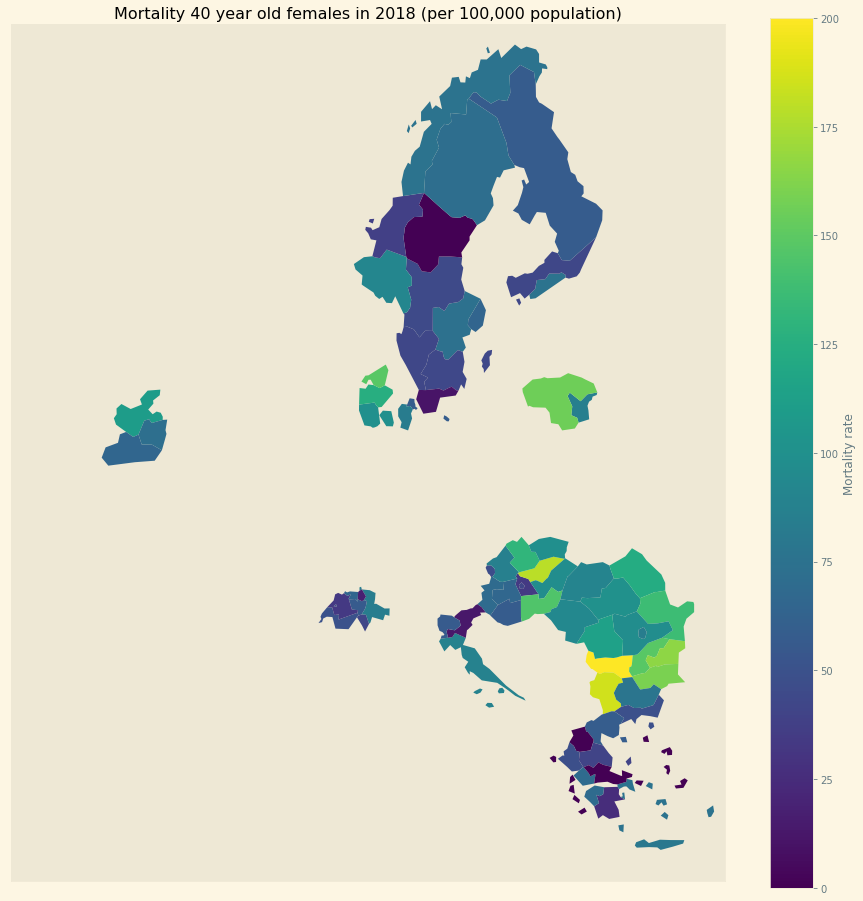
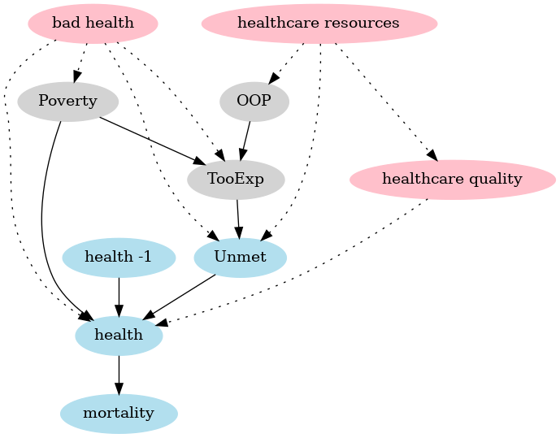
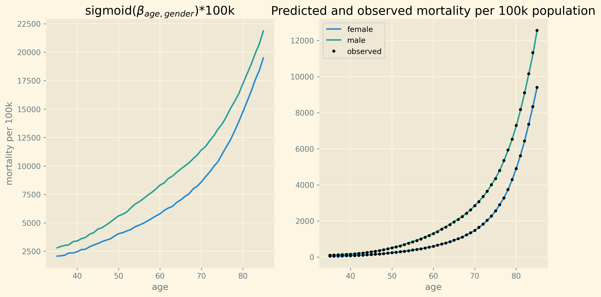
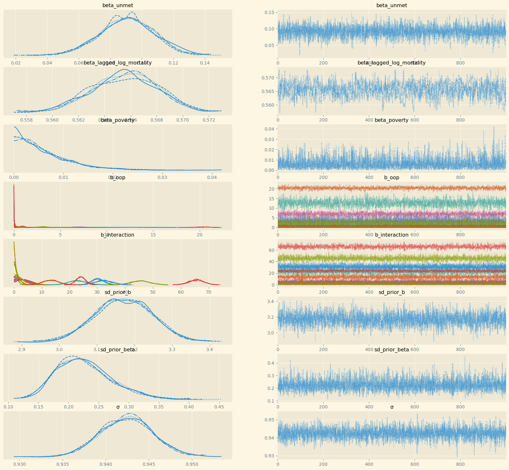
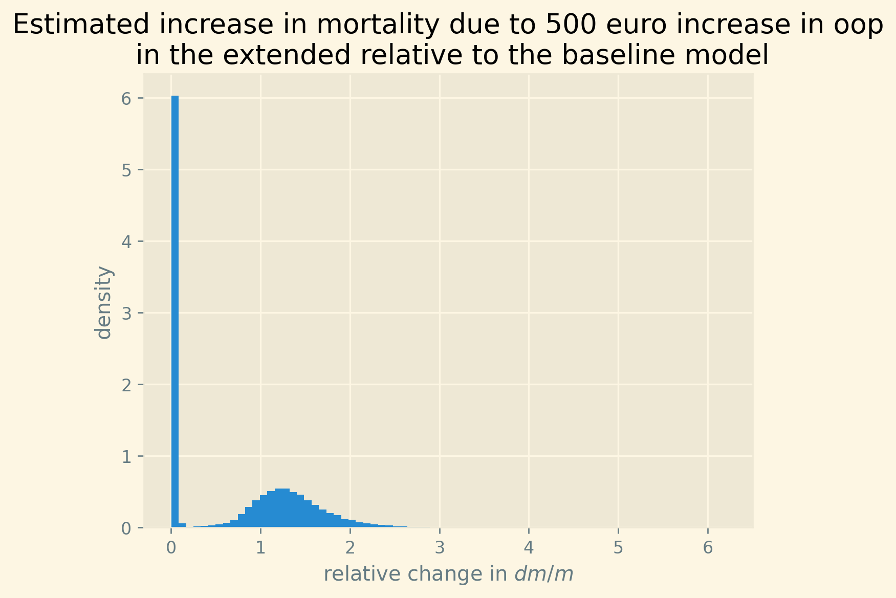
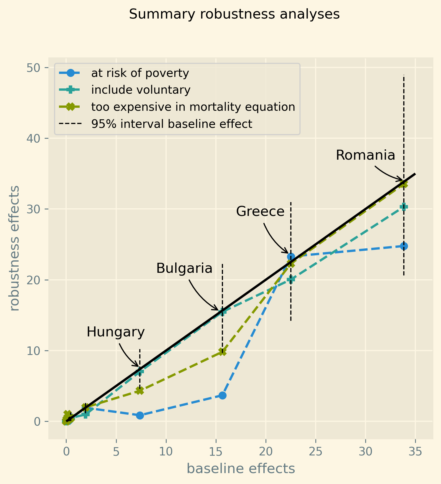

The health effects of demand-side cost-sharing in European health insurance
Table of Contents
The rationale for demand-side cost-sharing in health insurance is to deter patients from using low value care. But if agents are cash constrained, demand-side cost-sharing can lead them to postpone or forgo valuable treatments. We use data on European (NUTS 2) regions to show that the interaction between poverty rate and out-of-pocket payments leads to unmet medical needs and higher mortality.
JEL codes: I11, I13, I18
Keywords: out-of-pocket payments, mortality, health insurance, poverty, unmet medical needs
How does this work? code
With this document, the reader can retrace the code which we used to produce the results, figures, tables etc. for this paper.
This file is written in Emacs org mode which allows us to combine text and code. The file is exported to pdf (via latex) and to html for the web-version. The web-version –which you are reading now– contains the sections tagged code which are not exported to the pdf version of the paper.
Here you can download the pdf of the paper.
For the export to html we use LaTeX.CSS with some small tweaks to make it compatible with the org-exporter that we use which is based on org-ref. The export of the org file to html is almost perfect, but some issues are not yet resolved. To illustrate, the html export has trouble with latex environments like align, split in equations etc. For the time being this is resolved by using multiple equation environments. Further, whereas latex drops the label on equations that are not cited, the html exporter is not able to do this. Hence, there are more numbered equations in the web-version of the paper. This is all a bit clumsy but otherwise works fine.
We use Python to program the model and PyMC for the Bayesian analysis. All these resources are open source and freely available. If you want to install Python, Anaconda is a good place to start.
To avoid replicating code that is used for different models, we use noweb. This is used as follows. First, we give the code block a name, like code-preamble. Then we want to use this code, we call the code block by <<code-preamble>>.
There is a separate file which describes how we get the data from Eurostat. The dataset itself is too big for github and can be found on DataverseNL.
The repository for the paper can be found here.
preamble code
######################################################### # This file is tangled from the index.org file in the root directory # the author runs the code from the index.org file directly in emacs # if you do not have emacs, you can run the code to generate the trace files # from this file # the file expects the following folder structure to run without problems: # the folder with the data should be located at: ./data/data_deaths_by_age_nuts_2.csv # the trace files are written to ./traces # figures are written to ./figures #########################################################
import xarray as xr import numpy as np import pymc as pm import pytensor.tensor as pt import pytensor import pandas as pd import graphviz as gr import arviz as az import scipy as sp import seaborn as sns import matplotlib.pyplot as plt plt.style.use('Solarize_Light2') from country_codes import eurostat_dictionary from tabulate import tabulate
We use the following versions of pymc and numpy:
print(pm.__version__) print(np.__version__)
5.1.2 1.24.2
loading data
We read in the data. We drop rows (combination of calendar year, NUTS 2 region, age and gender) where mortality measures (deaths, population or lagged_mortality) or oop (HF3_PC_CHE) and fraction of population that postponed treatment because it was too expensive (TOOEXP) are missing.
We select ages between age_min and age_max and calendar years between first_year and last_year. We drop rows where the number of deaths during a year exceeds the population at January 1st in that age-gender-year-region category.
age_min = 35 age_max = 85 age_range = np.arange(age_max-age_min+1)[:,np.newaxis] plot_age = np.arange(age_min,age_max+1) first_year = 2009 last_year = 2019 df = pd.read_csv('./data/data_deaths_by_age_nuts_2.csv') df.rename(columns={'at risk of poverty':'poverty',\ 'percentage_material_deprivation':'deprivation',\ 'UNMET':'unmet'},inplace=True) df.dropna(subset=['deaths','population', 'TOOEXP',\ 'HF3_PC_CHE','lagged_mortality'], axis=0, how ='any',inplace=True) df = df[(df.population > df.deaths) & (df.age >= age_min) & \ (df.age <= age_max) & (df.year <= last_year) &\ (df.year >= first_year)] df['mortality'] = df.deaths/df.population*100 \ # mortality as a percentage # lagged mortality as fraction of mean lagged mortality # per age/gender group df['lagged_mortality_s'] = (df['lagged_mortality'])/\ df.groupby(['age','sex'])['lagged_mortality'].\ transform('mean') #len(df)
1. Introduction
Most developed economies face rising healthcare expenditures. In many countries the healthcare sector grows faster than the economy as a whole (OECD 2021). One of the instruments that governments have to curb this expenditure growth is demand-side cost-sharing. The effect of demand-side cost-sharing on healthcare utilization is well known. As cost-sharing increases, healthcare becomes more expensive for the individual and demand for treatments falls. It is less clear whether and to which extent demand-side cost-sharing induces people to forgo low value care only (Newhouse and the Insurance Experiment Group 1993; Schokkaert and van de Voorde 2011).
It is commonly believed that health insurance subsidizes health consumption, incentivizing individuals to seek expensive treatments with limited health benefits. Economists refer to this phenomenon as moral hazard. When considering the social costs of such treatments, which exceed the individual’s out-of-pocket (oop) expenditures, it is advantageous to reduce moral hazard through increased demand-side cost-sharing. This trade-off involves balancing the efficiency gains resulting from reduced moral hazard against the increased risk to risk-averse individuals stemming from oop expenses.
This study aims to examine behavioral hazard, which occurs when cost-sharing discourages patients from pursuing valuable treatments (Baicker, Mullainathan, and Schwartzstein 2015). If patients choose to forgo treatments with higher value than the associated costs, it results in a reduction of overall social welfare. Specifically, we focus on situations where individuals opt out of or delay treatment due to its high oop cost.
The objective of this paper is to develop a model that can be estimated using aggregate data to assess negative health effects of demand-side cost-sharing. We are particularly interested in examining how cost-sharing can make valuable treatments unaffordable, thus reducing overall health outcomes. We begin by considering two key ideas. First, if demand-side cost-sharing disproportionately affects individuals with lower incomes, the reduction in access to valuable healthcare due to increased costs will be more pronounced among this group. Higher income individuals, who have sufficient resources, are more likely to pay for valuable treatments even if they become costly in terms of oop expenses. Individuals with lower incomes may face liquidity constraints that force them to postpone or forgo treatment. Second, if there is a significant decline in demand for high-value care, we expect to observe this trend in mortality statistics at the aggregate level.

Figure 1: Mortality in NUTS 2 regions in Europe
To identify the health effects of cost-sharing we use mortality statistics of Eurostat at the NUTS 2 (Nomenclature of Territorial Units for Statistics) regional level. Figure 1 illustrates NUTS 2 regions used in this paper. Mortality varies by region/year/age/sex. In regions where the percentage of people on low income is high and demand-side cost-sharing is high, we expect to see high mortality. Since we have panel data, we control for NUTS 2 (and hence country) fixed effects.
Despite the forthcoming analysis, we present a summarized overview of the results in Figure 2. Our analysis focuses on the NUTS 2 regions within each country where poverty rates are highest, as these regions are likely to experience the strongest impact at a regional level. Employing our estimated model, we simulate the effect of a 500 euro increase in oop expenses on mortality rates. We express this effect as the increase in deaths (attributable to the rise in oop) per 1000 deceased individuals. We adopt this measure for two reasons. Firstly, mortality rates are –fortunately– quite low, thus any alteration in oop expenses will have a relatively small impact on mortality. By reporting the increase in mortality per 1000 deceased individuals, we facilitate the interpretation of these numbers. Additionally, we present this mortality measure for diseases that exhibit similar orders of magnitude, such as pneumonia. Secondly, in our model, this measure per 1000 deceased individuals is age-independent. In other words, the number of individuals dying from the increase in oop expenses may vary across different age groups (as 25-year-olds are less likely to die than 80-year-olds). However, the proportion of individuals dying as a result of the oop expense increase, relative to the total number of deceased, remains constant across age and gender. This approach allows us to reduce the number of parameters requiring estimation and fits the data quite well.
The blue bars in the figure indicate the average simulated effect of the 500 euro increase for each country’s respective region, while the black lines represent the 95% probability interval of the effect. It is worth noting that the four countries with the highest poverty levels in our sample, namely Bulgaria, Greece, Hungary, and Romania, exhibit the most substantial effects. For these countries, the 95% probability interval of the effect is noticeably different from zero. Conversely, the regions of the Scandinavian countries, Slovenia, and Switzerland demonstrate effects close to zero at a regional level due to their very low poverty rates.

Figure 2: Increase in number of deaths per 1000 dead due to a 500 euro increase in out-of-pocket payment for the region in each country where poverty is highest. Bars present the average predicted effect and black lines the 95% prediction interval.
The results suggest the following policy implications. An increase in oop has a measurable effect on mortality in regions where poverty is high. Policies to address this include a scheme that subsidizes healthcare expenditure (on top of health insurance) for poor people; e.g. through means-tested cost-sharing. A downside of such a targeted intervention is a higher marginal tax rate at low income levels contributing to a poverty trap. Indeed, if by earning more, the oop subsidy falls, the increase in net income is reduced. This makes such an increase in income less attractive. Alternatively, a government can introduce co-payments that vary with the cost-effectiveness of the treatment. Treatments with high value added would then feature a low co-payment to prevent people from postponing valuable care. This can also help to reduce mortality associated with cost-sharing (Chernew et al. 2008).
This study is not the first to examine the impact of demand-side cost-sharing on mortality. There is a collection of recent studies employing innovative methodologies and primarily relying on individual-level data to establish the causal effect of health insurance on health and mortality. There are challenges associated with identifying the effect of health insurance on health outcomes using individual-level data. To illustrate, there is a selection bias where individuals with poorer health tend to obtain more comprehensive health insurance due to higher anticipated medical expenditures. This bias can distort results in a way that individuals with more extensive coverage may experience adverse health outcomes, such as higher mortality rates.
Several studies have utilized the Medicaid eligibility expansion under the Affordable Care Act, which was implemented at various times across different states in the US, enabling the implementation of a difference-in-differences identification strategy. These studies have demonstrated that the Medicaid expansion (resulting in more comprehensive health insurance coverage) has led to a reduction in mortality rates (Borgschulte and Vogler 2020; Miller, Johnson, and Wherry 2021). Other analyses focus on Medicare Part D prescription drug coverage, in which end-of-year pricing displays non-linear patterns based on expenditure (Chandra, Flack, and Obermeyer 2021). The primary finding indicates that increases in oop costs for drugs result in reduced drug use, including the use of high-value treatments, subsequently leading to higher mortality rates. Goldin and colleagues conducted an experimental study in which individuals subject to the Affordable Care Act’s health insurance mandate were reminded of potential financial penalties for non-compliance. This reminder prompted individuals to opt for health insurance instead of remaining uninsured, and as a result, mortality rates were lower among those who received the reminder compared to the control group who did not (Goldin, Lurie, and McCubbin 2020).
Our paper adds to this evidence of negative health effects of demand-side cost-sharing in the following way. First, we utilize European data instead of US data. European countries tend to have a more homogeneous health insurance system compared to the diverse range of options available within the US. In the US, individuals may have employer-sponsored insurance, Medicaid or Medicare coverage, or no insurance at all, making it challenging to detect aggregate-level effects of changes in, say Medicaid coverage. On the other hand, European countries tend to have nationally determined health insurance features, resulting in a higher level of consistency. For instance, the OECD Health Systems Characteristics Survey shows that more than 90% of the population in European countries obtains primary healthcare coverage through automatic or compulsory insurance, with percentages exceeding 99% or 100% in most cases. In contrast, the corresponding figure for the US is less than one third. Therefore, country or region-wide statistics in Europe provide a better representation of the insurance situation for most citizens compared to the US, although they may not capture all individual nuances such as the purchase of complementary insurance.
Second, our paper highlights the association between high mortality rates and regions characterized by both high oop costs and poverty. This finding aligns with previous research indicating that healthcare utilization is influenced by individuals’ liquidity constraints. Individuals with lower incomes tend to defer or forgo valuable treatments when these are expensive (Gross, Layton, and Prinz 2020; Nyman 2003). Our focus on low incomes may result in an underestimation of the mortality effect of cost-sharing, as individuals with higher incomes may also forgo necessary treatments due to oop expenses (Brot-Goldberg et al. 2017; Chandra, Flack, and Obermeyer 2021). However, in this case, the decision to forgo treatment is more likely driven by factors other than liquidity issues.
Third, our study utilizes the regional structure of Eurostat data. We examine the impact of the interaction between oop expenses and poverty on mortality within specific age-gender groups at the NUTS 2 regional level. This approach helps address potential endogeneity concerns. For example, a country with an overall low health status may implement generous health insurance policies to improve population health. This direction of causality conflicts with our research focus. By analyzing variations in health within regions in relation to oop costs and poverty, while controlling for other factors using NUTS 2 fixed effects, we mitigate this issue. Moreover, examining health and mortality within each age cohort allows us to account for variations in age distributions across countries and regions. Other potential confounding effects when using regional data are discussed in a separate section below.
Fourth, Eurostat variables derived from the EU-SILC survey enable us to concentrate on the relevant causal mechanism. The survey includes questions about unmet medical needs in the past months and the reasons for these unmet needs. One of the reasons cited is the cost, which leads individuals to postpone or forgo treatment. This information allows us to simultaneously estimate the percentage of individuals in a NUTS 2 region who forgo treatment due to cost and the effect of unmet medical needs on mortality. Through this approach, we capture the relationship between high interaction effects of oop costs and poverty, an increased number of individuals postponing treatment due to cost, and higher regional mortality rates.
Finally, our paper distinguishes itself from the literature on the impact of income and wealth on health that typically relies on cross-country data (Chetty et al. 2016; Mackenbach et al. 2008; Semyonov, Lewin-Epstein, and Maskileyson 2013). This literature generally finds an association between lower income and wealth and poorer health status, although the exact causal mechanism remains unclear (Cutler, Lleras-Muney, and Vogl 2011). Two potential mechanisms have been proposed: higher income leading to increased expenditure on treatments and consequently better health, or healthier individuals having higher productivity and earning higher incomes. Our approach, incorporating fixed effects and using survey questions on unmet medical needs, allows us to focus on the mechanism where a high interaction effect between oop costs and poverty leads to unmet medical needs, resulting in poorer health status and higher mortality rates.
In summary, compared to studies utilizing individual-level data, our approach provides both a broader overview –based on a number of countries, instead of, say 65 year old Medicare users in the US– and less precise estimation of the effect of insurance generosity on mortality. Although we do interpret our results using the size of the effect, our main goal is to establish that an increase in oop costs in a poor region increases mortality. In particular, we quantify how sure we are that this effect is positive.
The next section presents a model explaining the relationship between the variables mortality, poverty, oop expenditure and the fraction of people forgoing treatment because it is too expensive. Then we describe the Eurostat data that we use. We explain the empirical model that we estimate. Estimation results are presented for the baseline model and we show that these are robust with respect to a number of our modeling choices. We conclude with a discussion of the policy implications. The appendix contains the proofs of our results and more details on our data and estimation. The online appendix is the html version of this paper which includes –per section– the python code that is used in each section’s analysis.1 This is a final advantage of using data at the regional level. The repository contains the python code that gets the data from Eurostat so that each step of this analysis can be replicated. The data used for this paper can be downloaded from DataverseNL (Boone 2022).
1.1. Map code
As we use a different python kernel here from the one used in the rest of the paper (due to conflicting supporting packages at the time of the analysis), we need to import some libraries and the data again. We use geopandas to plot the map of the NUTS 2 regions where the color indicates mortality per 100k population.
import numpy as np import geopandas as gpd import matplotlib.pyplot as plt plt.style.use('Solarize_Light2') import pandas as pd # import altair as alt
# read the NUTS shapefile and extract # the polygons for a individual countries nuts=gpd.read_file('./SHP/NUTS_RG_60M_2021_4326_LEVL_2.shp') age_min = 35 age_max = 85 plot_age = np.arange(age_min,age_max+1) first_year = 2009 last_year = 2019 df = pd.read_csv('./data/data_deaths_by_age_nuts_2.csv') df.dropna(subset=['deaths','population', 'TOOEXP',\ 'HF3_PC_CHE','lagged_mortality'], axis=0, how ='any',inplace=True) df = df[(df.population > df.deaths) & (df.age >= age_min) & \ (df.age <= age_max) & (df.year <= last_year) &\ (df.year >= first_year)] df['mortality'] = df.deaths/df.population*100000 df = df[(df.year==2018) & (df.age==40) & (df.sex=='F')] nuts = nuts.to_crs(epsg=3035) nuts['centroids'] = nuts.centroid nuts = nuts.merge(df, how='inner',\ left_on = 'NUTS_ID', right_on = 'nuts2')
nuts[nuts.sex=='F'].plot(column='mortality', legend=True, figsize=(16,16), # vmin = 71, vmax = 0.002*100000, missing_kwds={'color': 'lightgrey'}, legend_kwds={'label': "Mortality rate", 'orientation': "vertical"}) # adjust plot domain to focus on EU region plt.xlim(0.25e7, 0.6e7) plt.ylim(1.3e6, 5.5e6) plt.xticks([],[]) plt.yticks([],[]) plt.title(\ 'Mortality 40 year old females in 2018 (per 100,000 population)'); # plt.tight_layout() # plt.legend('right');
2. Theory
The relevant variables in our data are mortality per region/year/age/sex category, the percentage of healthcare expenditure paid out-of-pocket (oop), the poverty rate and the fraction of people per region postponing or forgoing treatment because it is too expensive. We introduce a model to explain how these variables are related. Then we discuss what variables are missing from the model potentially causing confounding effects.
2.1. simple model
Consider a population (of a certain age and gender in a particular year) in an EU region where a fraction \(\alpha \in \langle 0,1 \rangle\) has low income \(y^l\) and fraction \(1-\alpha\) high income \(y^h\). We think of \(\alpha\) as the poverty rate. Let \(\pi^j\) denote the probability that someone with income \(y^j, j=l,h\) falls ill. As is well known, low income people tend to have a lower health status (Cutler, Lleras-Muney, and Vogl 2011). We capture this by assuming \(\pi^l > \pi^h\). People on low income may have a less healthy diet, exercise less etc. due to either the cost or knowledge of healthy lifestyle choices. This makes it more likely that they fall ill. Thus we separate the direct health effect of income (\(\pi^l > \pi^h\)) from treatment decisions made by people on low income.
Generally speaking, oop payments tend to take two forms that we want to capture: a coinsurance rate, which we denote \(\xi \in [0,1]\), and a maximum expenditure, which we denote \(D\) (for deductible). Some systems have a combination of the two.
Conditional on falling ill, there is a probability \(\zeta_i \in [0,1]\) that the patient is advised to get treatment \(i\) at cost \(x_i\) for \(i\) in the set of “illnesses” \(I\) with \(\sum_{i \in I} \zeta_i =1\).2 We define \(I_{\xi}\) as the subset of \(I\) where \(\xi x_i < D\) and \(oop_i = \xi x_i\) and set \(I_D\) where \(\xi x_i \geq D\) and \(oop_i = D\). To keep things simple, we assume that \(\zeta_i\) is exogenous to the patient. We model the treatment decision on the extensive margin only: an agent accepts or rejects the treatment proposed by a physician.3 A pure coinsurance system has \(\xi < 1\) and \(I_{\xi}=I\). A pure deductible system \(\xi=1\) and \(I_D\) non-empty. A combination of the two has \(\xi<1\) and there is a maximum on the oop payment. Health insurance systems in Europe tend to have such maximum oop expenditure.4 An increase in either \(\xi\) or \(D\) is interpreted as making health insurance less generous.
Whereas with individual level data one can determine whether an individual faces a positive treatment price at the margin (E.g. using the end-of-year price as in Keeler, Newhouse, and Phelps 1977; Ellis 1986), this is not possible with the aggregate data that we use here. Hence, we rely on an aggregate summary variable, denoted OOP, measured as oop payments over total healthcare expenditure. That is, the fraction of healthcare expenditure paid by patients oop. We interpret this variable as capturing the generosity of the health insurance system. To illustrate, if healthcare is free at point of service, OOP equals zero; if there is no health insurance at all, OOP equals 1. In a pure coinsurance system with rate \(\xi\) applying to all treatments, OOP equals \(\xi\). It is the cap on oop expenditure (like a deductible) that makes the relation between OOP and healthcare use non-linear. The challenge then is to capture changes in \(\xi\) and \(D\) although we do not directly observe these variables in the data. This is what the model sets out to do.
If an ill patient receives treatment, we denote her (expected) health \(\sigma\), while without treatment (expected) health equals \(\sigma_0\) with \(0 < \sigma_0 < \sigma < 1\).5 Health is normalized at value one for a patient who does not fall ill. The trade off between health and oop is captured by \(\sigma_0/\sigma <1\) and a simple assumption that utility is multiplicative in health and consumption. That is, consumption yields higher utility if you are healthier. To put it bluntly, if you are healthy and can travel, go skiing etc. consumption yields higher utility than when you are ill, lying in bed all day. We model the patient’s treatment decision as:
\begin{equation} \label{orgff195e9} \nu \sigma u(y^j-oop_i) > \sigma_0 u(y^j) \end{equation}where utility \(u(.)\) is determined by how much money can be spent on other goods: income \(y^j\) minus oop in case of treatment and \(y^j\) if no treatment is chosen. The utility function \(u(.)\) is increasing and concave in consumption: \(u(.), u'(.) >0\) and \(u''(.) < 0\). Further, parameter \(\nu\) captures other factors than pure financial ones affecting a patient’s treatment choice.6 If the inequality holds, the patient accepts treatment \(i\).
In our data, we have a variable “unmet medical needs” based on a number of motivations: treatment is too far away to travel to, there is a long waiting list, the patient is scared to undergo treatment etc. To make our point, it is enough to assume that such factors affect utility in a multiplicative way. To illustrate, if the patient has to travel far for treatment, utility is reduced by multiplying it with a value of \(\nu < 1\). Agents differ in \(\nu\) and the cumulative distribution function of \(\nu\) is given by \(G(\nu)\), its density function by \(g(\nu)\). Other factors can include waiting time till treatment, belief that the condition will resolve itself without intervention, poor decision making e.g. with a focus on the short term thereby undervaluing the benefit of treatment.
The probability that a patient with income \(y^{j}\) accepts treatment \(i\) offered by a physician equals
\begin{equation} \label{orgacdd769} \delta_i^j = 1-G\left( \frac{\sigma_0}{\sigma} \frac{u(y^{j})}{u(y^{j}-oop_i)} \right) \end{equation}that is, \(\nu\) is big enough that inequality \eqref{orgff195e9} holds. With probability \(G\left( \frac{\sigma_0}{\sigma} \frac{u(y^{j})}{u(y^{j}-oop_i)} \right)\) the patient decides to postpone or forgo treatment \(i\).
The probability that a patient postpones or skips a treatment because it is too expensive is given by
\begin{equation} \label{org79aac8e} G\left( \frac{\sigma_0}{\sigma} \frac{u(y^{j})}{u(y^{j}-oop_{i})} \right) - G\left( \frac{\sigma_0}{\sigma} \right) \end{equation}These are agents \(\nu\) that would have chosen treatment \(i\) if it were free (\(oop_{i}=0\) and \(u(y^j)/u(y^j-oop_i)=1\)) but who forgo treatment now that it costs \(oop_{i}>0\). The probability \(G(\sigma_{0}/\sigma)\) captures factors like waiting lists or the patient hoping that the health problems resolve themselves without treatment. That is, reasons for postponing treatment not related to oop payments.
In the proof of the lemma below, we show that the probability of accepting treatment, \(\delta_i^j\), is increasing in income \(y^j\) and decreasing in \(oop_{i}\), as one would expect.
Note that this model differs from a standard Rothschild and Stiglitz –R&S– health insurance model (Rothschild and Stiglitz 1976) in the following way. In an R&S model income plays no role and people with low health status have generous insurance coverage. Hence, they would not postpone valuable care. In our model, people with low health tend to have low income and may skip valuable treatment if the oop expense is high. This negatively affects their health.
In Appendix 9 we specify how (unobserved) health and treatment decisions translate into (observed) mortality for each age/gender class.
In our data, the variable Unmet varies with NUTS 2 region and year. In terms of our model, we define this variable with subscript \(2\) for region and \(t\) for calendar year as follows:
with treatment probability \(\delta^j_i\) for illness \(i \in I\) and income class \(j \in \{l,h\}\) varying with country \(c\) and year \(t\) because oop varies with countries over time. In words, for people on low [high] income –fraction $α2t [1-α2t]$– there is a probability \(\zeta_i \pi^l [\zeta_i \pi^h]\) of falling ill with disease \(i\) where they forgo treatment with probability \(1-\delta_{ict}^l [1-\delta_{ict}^h]\).
Further, in our data we have the variable OOP defined as oop payments as a percentage of healthcare expenditure. In terms of our model, we write this –ignoring subscripts– as
where \(\zeta_i (\alpha \pi^l \delta^l_i + (1-\alpha) \pi^h \delta^h_i)\) denotes the fraction of people accepting treatment \(i\). If people do not accept treatment, there is no oop and no expenditure. The numerator of OOP contains the oop payments \(oop_{i}\) and the denominator expenditures \(x_i\). If \(I_{\xi} = I\), it is clear that \(\text{OOP} = \xi\). Because \(I_D\) is non-empty (European countries have a maximum oop payment), the expression for OOP is actually non-trivial. We can also write OOP as the ratio of average oop per head and average healthcare expenditure per head:
In our data these variables vary by country \(c\) and year \(t\).
The following lemma summarizes the main results from the model and presents the equations for mortality \(m_{ag2t}\) varying with age, gender, NUTS 2 region, calendar year and the fraction of people forgoing treatment because it is too expensive, \(\text{TooExp}_{2t}\) that we estimate below. Further, our simulation results are presented in terms of the relative increase in deaths due to the increase in oop, \(dm_{ag2t}/m_{ag2t}\). In the lemma we use the following indices: age \(a\), gender \(g \in \{f,m\}\), country \(c\), NUTS 2 region \(2\), calendar year \(t\)
Healthcare demand \(\delta = 1-G(.)\) is increasing in income \(y^j\) and decreasing in \(oop_i\) (\(\xi\) or \(D\)).
We write the expression for mortality of age cohort a and gender g in NUTS 2 region 2 at time t as:
\[
m_{ag2t} = \frac{e^{\beta_{ag}}}{1+e^{\beta_{ag}}} e^{\left( \mu_2 + \gamma \ln \left(\frac{m_{a-1,g,2,t-1}}{\bar{m}_{a-1,g}}\right)+ \beta_{poverty}\text{Poverty}_{2t} + \beta_{unmet}\text{Unmet}_{2t}\right)}
\]
where \(\beta_{poverty}, \beta_{unmet} > 0\).
The linear expansion of TooExp with respect to OOP can be written as
\[
\text{TooExp}_{2t} = b_{0,2} + b_{0,t} + \text{OOP}_{ct} \bar{x}_{ct} \left( b_{oop,c} + b_{interaction,c} \text{Poverty}_{2t} \right)
\]
where \(b_{oop,c},b_{interaction,c}>0\).
Finally, the mortality effect of a 500 euro increase in oop can be written as:
\begin{eqnarray*} \frac{dm_{ag2t}}{m_{ag2t}} &= \beta_{unmet} \text{TooExp}_{2t}(1-\text{TooExp}_{2t}) 500 \times \\ & (b_{oop,c}+b_{interaction,c} Poverty_{2t}) \end{eqnarray*}As derived in the appendix, mortality can be written as the multiplication of an age/gender effect with a factor depending on the situation in the NUTS 2 region. We think of the age/gender effect as biology that is the same across regions. This is modeled as a sigmoid of age and gender fixed effects, \(\beta_{ag}\), which makes sure the probability of death is between 0 and 1. We multiply this baseline probability with a multiplier capturing the other effects.
First, NUTS 2 region fixed effects, \(\mu_2\), which capture regional variation in the probability of falling ill. One can think of lifestyle habits that vary by region, external factors affecting health like clean air, road safety, travel distance to closest medical facilities that tend to be longer in rural areas etc.
Second, whether this age \(a\) cohort experienced a health shock in the previous period \(t-1\) when aged \(a-1\). If there was such a negative health shock that increased mortality, we expect that part of this shock spills over in the current period further increasing mortality. We measure the health shock as mortality for this group in the previous period compared to average mortality for this group (across regions and time).
Third, the region’s poverty level and the fraction of people with unmet medical needs in the region in year \(t\) affect mortality. As shown in the proof of the lemma, \(\beta_{poverty} = (\pi^l - \pi^h)(1-\sigma) > 0\): if there are no unmet needs, poverty still raises mortality as poor people fall ill more often (\(\pi^l-\pi^h >0\)) and treatment only partially recovers their health (\(1-\sigma>0\)). This is the health effect of low income. Further, \(\beta_{unmet}=(\sigma-\sigma_0)>0\): with unmet medical needs, patients end up with lower health than they would have gotten with treatment (\(\sigma_0 < \sigma\)). In words, we expect mortality (in a region in year \(t\)) to be higher (for a given age/gender category) if poverty is higher and there are more people with unmet medical needs.
If the sum of these three terms is negative, the multiplier is less than 1 and mortality for this age/gender/region/year combination is reduced compared to the baseline probability given by the sigmoid. If the sum of the terms is positive, mortality for this observation is higher than the baseline probability.
For the second equation in the lemma, we use a linear expansion of TooExp in terms of OOP. The appendix shows how we derive this relation using the policy variables \(\xi\) and \(D\) which affect OOP and TooExp simultaneously. It turns out that there is a direct effect of OOP on TooExp and an interaction effect with the fraction of people below the poverty line in a region. We show that \(b_{oop,c},b_{interaction,c} > 0\): a region that lies in a country with high OOP tends to have high unmet needs (as medical care is expensive) and especially so if the region features a high poverty rate. On the other hand, if OOP equals 0 (healthcare is free at point-of-service) one does not expect poverty to affect TooExp (it will still affect health and mortality through lifestyle choices).
The third equation shows how a 500 euro increase in oop affects mortality for an age/gender category in a NUTS 2 region in year \(t\). In our simulations we present this as the increase in mortality per 1000 deaths. The mortality effect of demand-side cost-sharing goes via unmet medical needs. People fall ill and cannot afford the treatments recommended to them by a physician. This reduces their health status and affects the probability of dying.
As shown below, in our data \(TooExp\) is smaller than 0.5 in all regions. Hence, we see that the mortality effect \(dm/m\) increases with the fraction of people that forgo treatment because it is too expensive. This suggests the following non-linearity in the effect of oop: if demand-side cost-sharing is initially low, \(TooExp\) is low and an increase in oop hardly affects mortality, but in countries where oop is already significant and \(TooExp\) is high a further increase in oop has serious mortality consequences. Finally, an increase in oop increases the fraction of people with unmet medical needs because treatment is too expensive and especially so in regions where poverty is high. The policy implications of this are clear: in a country where oop is already high and where poverty is a serious problem, the government should be careful increasing oop further.
Note that the increase in the number of deaths \(dm_{ag2t}/m_{ag2t}\) is independent of age. This is due to our formulation of mortality where we have a baseline mortality depending on age/gender only and a deviation from this baseline based on poverty and unmet medical needs in the region.
2.2. confounding effects
The model sets the stage for the empirical analysis in two ways: (i) it helps us specify functional forms, (ii) it helps us to avoid “causal salad” (McElreath 2020). Because the model is clear on the mechanisms that are covered, we can also identify potential mechanisms that are missing which can confound our estimates. This is illustrated with a Directional Acyclic Graph, DAG (Pearl 2009; Hernn and Robins 2023). The arrow points from the node that has a causal effect to the node that is affected.

Figure 3: DAG of the model (in blue and grey with solid arrows) and confounding effects (in red, dashed arrows).
The grey nodes capture the model equation where poverty and OOP (and their interaction which is not separately depicted in a DAG) affect the fraction of people that forgo treatment because it is too expensive. The blue nodes capture the mortality equation where TooExp affects (because it is part of) people reporting unmet medical needs, poverty affects health and previous period health (health -1) affects today’s health. Finally, health determines mortality.
The DAG clearly shows two causal paths from poverty to mortality. First, poverty is directly associated with lower health, say due to the financial stress involved of living on low income and due to less healthy lifestyle choices, e.g. because fresh fruit and vegetables tend to be expensive. Second, poverty makes it more likely that people forgo valuable treatments leading to unmet medical needs; especially when OOP is high.
Some variables causing differences between regions that are more or less constant over time –think of lifestyle (smoking habits), pollution in the region etc.– are not explicitly mentioned in the DAG but are captured by region fixed effects in the model.
Effects are potentially confounding if they differ between regions, vary over time (not captured by fixed effects) and simultaneously affect both unmet needs and mortality (in the mortality equation) or both TooExp and the interaction OOP \(\times\) poverty (in the TooExp equation). In the robustness analysis, we focus on two plausible mechanisms that can lead to these effects over time: shocks to healthcare resources and to health itself.
First, consider a shock that reduces government resources available to finance healthcare in the region or country. If this increases waiting lists due to reduced healthcare capacity, Unmet is likely to rise. At the same time, this can also reduce the quality of care, say because equipment maintenance is reduced, equipment is replaced less often or due to wage cuts high quality physicians leave and are replaced by lower quality staff. This reduction in care quality can affect health and mortality introducing a different mechanism from the one we focus on; that is, we have a causal path (indicated with dotted lines) via the red node healthcare quality that goes outside the model.
Note that a shock to government resources which raises poverty (due to reduced social assistance) and forces the government to raise out-of-pocket expenditure (say, by raising the deductible) is not a confounding effect. Indeed, the model captures that due to this shock the fraction of people that forgo treatment because it is too expensive goes up. Further, this increase in TooExp raises the fraction of people with unmet medical needs which will affect health and ultimately mortality. Unlike the healthcare quality example above, here all causal paths are within the model (going through gray and blue nodes).
Second, a health shock (causing a higher fraction of people with bad health) can increase both unmet medical needs (as more people fall ill, more people can have unmet needs) and increase mortality. This is partly captured by previous year mortality in the equation for \(m_{ag2t}\) in the lemma but in the current year this effect is depicted by the dotted arrow from (red) bad health to unmet needs and mortality (via health). This (current year) effect goes outside the model and can potentially confound the effect that we find. In the same vein, a health shock can increase the fraction of people that forgo medical treatment because it is too expensive and can raise poverty through reduced productivity. Again this is a potentially confounding effect outside of the model. Although our data do not include the Covid years, we cannot exclude the possibility of other shocks that tend to either reduce health and raise mortality or increase poverty and the fraction of people forgoing treatment because it is too expensive.
In the robustness section we introduce variables to control for these potentially confounding healthcare quality and health effects. Then we compare our baseline estimate of the OOP effect with the effect that follows from these equations with an extended variable set.
2.3. DAG code
In this section we use the graphviz library to plot the DAG for our model.
g = gr.Digraph() g.attr('node',color='lightgrey', style='filled') g.edge("OOP", "TooExp") g.edge("Poverty", "TooExp") g.attr('node',color='lightblue2', style='filled') g.edge("Unmet", "health") g.edge("health -1", "health") g.edge("health", "mortality") g.edge("TooExp", "Unmet") g.edge("Poverty", "health") g.attr('node',color='pink', style='filled') g.edge("bad health", "TooExp", style="dotted") g.edge("bad health", "Unmet", style="dotted") g.edge("bad health", "health", style="dotted") g.edge("bad health", "Poverty", style="dotted") g.edge("healthcare resources", "Unmet", style="dotted") g.edge("healthcare resources", "OOP", style="dotted") g.edge("healthcare resources", "healthcare quality", style="dotted") g.edge("healthcare quality", "health", style="dotted") g.render("./figures/DAG",format="png")
figures/DAG.png
3. Data
The data that we use is from Eurostat’s regional database and provides for NUTS 2 regions population size and number of deaths per age-gender category. In principle, we have data on 14 countries and 78 regions for the years 2009-2019, ages 35-85 for women and men. The years 2009-2019 were chosen because, at the time of the analysis, data on poverty was available from 2009 onward and data on the number of deaths ran till 2019. Further, we want to exclude the corona years which were exceptional in terms of mortality. We start at age 35 because at ages below 35, mortality is so low that there is hardly a difference between mortality in regions with different poverty levels (see Figure 4 below). For ages above 85 population numbers per region get rather low.
We drop NUTS 2 region-year combinations where for an age-gender category –due to reporting issues or people moving– the number of deaths in a year exceeds the population size at the start of the year. We focus on observations where we have complete records on mortality, the fraction of people indicating they postponed treatment because it was too expensive and oop expenditure.
Table 1 shows the summary statistics for our variables. We briefly discuss the main variables, the appendix provides more detail. We have more than 50k observations.7 The average population size per region-age-gender category is about 7500 and the average number of deaths 100. Median population size per category equals 6500 and median number of deaths 56. In our data, the percentage of people dying in a NUTS 2/year/age/gender category (mortality) equals 2% on average with a maximum of 20% for some region and age combination.
| count | mean | std | min | median | max | |
|---|---|---|---|---|---|---|
| population | 52612 | 7491.3 | 4805.3 | 440 | 6477 | 36117 |
| deaths | 52612 | 103.2 | 126.5 | 0 | 56 | 1033 |
| mortality (%) | 52612 | 2.1 | 2.9 | 0 | 0.8 | 20.7 |
| poverty (%) | 50878 | 16.5 | 6.6 | 2.6 | 15.3 | 36.1 |
| deprivation (%) | 52612 | 11.2 | 12.8 | 0 | 3.4 | 52.3 |
| too exp. (%) | 52612 | 2 | 3.1 | 0 | 0.6 | 16 |
| unmet (%) | 52612 | 5.8 | 4.1 | 0 | 4.8 | 20.9 |
| out-of-pocket (%) | 52612 | 22 | 8.9 | 8.8 | 19.5 | 47.7 |
| voluntary (%) | 52612 | 3.1 | 3.1 | 0.3 | 1.6 | 15.2 |
| expend. per head | 52612 | 3386.6 | 2691.3 | 307.7 | 3559.5 | 8484.9 |
| infant mortality (\textperthousand) | 52612 | 4.3 | 2.3 | 0.8 | 3.6 | 11.6 |
| bad health (%) | 52612 | 12.8 | 12.2 | 0.8 | 8.3 | 78.9 |
We use two measures for poverty; each of these measures comes from the EU statistics on income and living conditions (EU-SILC) survey. The first is “at-risk-of-poverty rate” that we refer to as poverty. This is a relative poverty measure: the share of people with disposable income after social transfers below a threshold based on the national median disposable income. The material deprivation measure (denoted deprivation) refers to the enforced inability to pay unexpected expenses, afford adequate heating of the home, durable goods like a washing machine etc.
In our data, the (unweighted) average (across regions and years) percentage of people at risk of poverty equals 16% with a maximum of 36%. For material deprivation the numbers are 11% and 52%. These measures vary by NUTS 2 region and year but not by age or gender. We use deprivation in our baseline analysis because it captures more closely the idea of postponing treatment due to financial constraints. The poverty variable is used in a robustness check.
Also from the EU-SILC survey, we use the variable capturing unmet medical needs because the forgone treatment was too expensive (too exp). The variable unmet measures percentage of people in need of healthcare that postpone or forgo treatment because it is either too expensive, the hospital is too far away, there is a waiting list for the treatment, the patient hopes that symptoms will disappear without treatment, the patient is afraid of treatment or has no time to visit a physician. As explained in the model above, our analysis uses both too exp and unmet (which includes too exp as reason for unmet medical needs) as variables.
The measure OOP that we use in the baseline model, is based on household oop payments (out-of-pocket). In particular, this measures the percentage of healthcare expenditures paid oop. This varies by country and year. The higher OOP, the less generous the healthcare system is (in terms of higher coinsurance \(\xi\) or deductible \(D\) in the model above). We expect that high OOP is especially problematic in regions with a high percentage of people with low income.
In a robustness analysis we consider the sum of oop and payments to voluntary health insurance (voluntary) as a percentage of health expenditures as our OOP measure. The reason why we also consider voluntary insurance is that basic or mandatory insurance packages can differ between countries. If people are willing to spend money on voluntary insurance, it can be the case that this voluntary insurance covers treatments that people deem to be important. Put differently, a country that finances all expenditure (“free at point of service”) for a very narrow set of treatments would appear generous if we only used oop payments. The narrowness of this insurance would then be signalled by people buying voluntary insurance to cover other treatments.
As can be seen in Table 1, out-of-pocket is the most important component of the two OOP inputs. Percentage of healthcare expenditure paid oop is a multiple of the percentage financed via voluntary insurance (both in terms of the mean and of the minimum, median and maximum reported in the table). Therefore, the baseline model works with oop payments (only).
As shown in Lemma 1, healthcare expenditure per head \(\bar x_{ct}\) (expend per head) affects how OOP influences the fraction of people forgoing treatment because it is too expensive. Expenditure per head is on average 3300 euro for the countries in our data. But the variation is big with a standard deviation of almost 2700 euro.
The last two variables are used in our analysis of confounding effects. Infant mortality is a well known measure of population health and healthcare quality (Health at a Glance 2023: OECD Indicators 2023). In contrast to measures like treatable and preventable mortality, infant mortality is not directly correlated with our mortality measure which considers people above age 35. If there is a negative shock in a year reducing the quality of care, we expect infant mortality to pick this up. It is defined as the number of deaths of infants (younger than one year of age at death) per 1000 live births in a given year.
Finally, bad health gives the percentage of people who answer bad or very bad when asked about their health status in the EU-SILC survey. Around 12% report self-perceived bad or very bad health and this ranges from less than 1% in some regions to almost 80% in others. This variable is used to control for health shocks over time as potential confounding effects. If healthcare quality deteriorates one would also expect more people indicating lower health status.
Figure 4 (left panel) shows average mortality as a function of age for women and men. This is the pattern that one would expect: clearly increasing with age from age 40 onward and higher for men than for women (as women tend to live longer than men). Figure 4 (middle panel) shows the effect we are interested in: mortality is higher in regions where the interaction OOP \(\times\) Poverty is high than where it is low and this difference increases with age.
Both for women and for men, we plot per age category the difference between average mortality in regions that are at least 0.5 standard deviation above the mean for OOP \(\times\) Poverty and regions that are at least 0.5 standard deviation below the mean. Around age 82, this mortality difference equals approximately 4 percentage points. In the raw data, for 100 (wo)men aged 82, there are 4 additional deaths in regions with high interaction OOP \(\times\) Poverty compared to regions with low interaction. Note that this plot of the raw data does not correct for other factors, like the poverty level itself, and thus over-estimates the effect of OOP \(\times\) Poverty on mortality. The right panel in this figure does a similar exercise with the fraction of people reporting unmet medical needs. Mortality is higher in regions where unmet needs are at least 0.5 standard deviation above the mean compared to regions where it is 0.5 standard deviation below the mean.
The observation from the figure that the difference between the two sets of regions is approximately zero for people below 35, is our motivation to include ages above 35 only in our data. Further, the difference in mortality between the regions increases with the mortality level in the left panel. This is in line with our specification in Lemma 1 where unmet needs has a multiplicative effect on the underlying (biological) mortality rate modeled by \(e^{\beta_{ag}}/(1+e^{\beta_{ag}})\).

Figure 4: Mortality and difference in mortality between regions with high and low interaction OOP \(\times\) Poverty and high and low unmet medical needs.
3.1. data code
The following python code generates Table 1 with summary statistics. The noweb notation <<code-preamble>> runs the code from Listing 2 into the python cell without using copy/paste.
<<code-preamble>> <<code-data>> headers = ['count','mean','std','min','median','max'] variables = df[['population','deaths','mortality',\ 'poverty',\ 'deprivation',\ 'TOOEXP','unmet',\ 'HF3_PC_CHE','HF2_PC_CHE',\ 'health expenditure per capita',\ 'infant mortality', 'bad_self_perceived_health']]\ .describe().T[['count','mean','std','min','50%','max']] variables = variables.round(1) variables['count'] = variables['count'].astype(int) variables.rename({'poverty':'poverty (%)',\ 'mortality':'mortality (%)',\ 'deprivation':\ 'deprivation (%)', 'HF2_PC_CHE':'voluntary (%)',\ 'HF3_PC_CHE':'out-of-pocket (%)',\ 'TOOEXP':'too exp. (%)',\ 'health expenditure per capita':\ 'expend. per head',\ 'unmet':'unmet (%)',\ 'bad_self_perceived_health':'bad health (%)',\ 'infant mortality':'infant mortality (\\textperthousand)'},inplace=True) print(tabulate(variables,headers,tablefmt="orgtbl"))
| count | mean | std | min | median | max | |
|---|---|---|---|---|---|---|
| population | 52612 | 7491.3 | 4805.3 | 440 | 6477 | 36117 |
| deaths | 52612 | 103.2 | 126.5 | 0 | 56 | 1033 |
| mortality (%) | 52612 | 2.1 | 2.9 | 0 | 0.8 | 20.7 |
| poverty (%) | 50878 | 16.5 | 6.6 | 2.6 | 15.3 | 36.1 |
| deprivation (%) | 52612 | 11.2 | 12.8 | 0 | 3.4 | 52.3 |
| too exp. (%) | 52612 | 2 | 3.1 | 0 | 0.6 | 16 |
| unmet (%) | 52612 | 5.8 | 4.1 | 0 | 4.8 | 20.9 |
| out-of-pocket (%) | 52612 | 22 | 8.9 | 8.8 | 19.5 | 47.7 |
| voluntary (%) | 52612 | 3.1 | 3.1 | 0.3 | 1.6 | 15.2 |
| expend. per head | 52612 | 3386.6 | 2691.3 | 307.7 | 3559.5 | 8484.9 |
| infant mortality (\textperthousand) | 52612 | 4.3 | 2.3 | 0.8 | 3.6 | 11.6 |
| bad health (%) | 52612 | 12.8 | 12.2 | 0.8 | 8.3 | 78.9 |
standardizing data
In our Bayesian estimation we work with standardized variables. To use fixed effects, we index variables by country and NUTS 2 indices, gender, year and age. These indices are generated with pandas’ factorize function.
All variables representing percentages are turned into fractions (between 0 and 1) and are not (further) standardized. Population size and number of deaths are not standardized either. Health care expenditure is standardized by dividing by its standard deviation using the function standardize defined below.
country_index, country_list = pd.factorize(df.country,sort=True) country_code_index, country_code_list = \ pd.factorize(df.country_code, sort=True) nuts2_index, nuts2_list = pd.factorize(df.nuts2,sort=True) nuts1_index, nuts1_list = pd.factorize(df.nuts1,sort=True) gender, gender_list =\ np.array(pd.factorize(df.sex,sort=True),dtype=object) year, year_list =\ np.array(pd.factorize(df.year,sort=True),dtype=object) age_index, age_list = \ np.array(pd.factorize(df.age,sort=True),dtype=object) N_countries = len(set(country_index)) N_nuts1 = len(set(nuts1_index)) N_nuts2 = len(set(nuts2_index)) N_age = len(set(age_index)) def standardize(x): return x/x.std()
The following cell standardizes variables as percentage in our data into fractions and transforms lagged mortality into logs, lagged_log_mortality, and fraction too expensive into log-odds, too_exp_lo. As mortality and TooExp can be zero for some observations, we clip these variables from below. The lower bounds imply probabilities of less than 1%. Neither of these variables is close to one in our data; hence the upper-bound is not relevant.
# dependent variable mortality = df.deaths.values population = df.population.values lagged_log_mortality = np.clip(\ (np.log(df['lagged_mortality_s'])),\ np.log(0.0001),np.log(10)) # nuts 2 measures standardized poverty_s = np.ma.masked_array(df['poverty'].values/100.0) deprivation_s = (df['deprivation'].values/100.0) oop_s = (df['HF3_PC_CHE'].values)/100.0 # only oop oop_e = (df['HF3_PC_CHE'].values+df['HF2_PC_CHE'].values)/100.0 # oop extended to include voluntary insurance too_exp = (df['TOOEXP'].values)/100.0 too_exp_lo = np.clip(np.log(too_exp/(1-too_exp)),np.log(0.0001),np.log(10)) unmet = (df['unmet'].values)/100.0 #log odds of TooExp # country measures expenditure_s = standardize(df['health expenditure per capita'].values) std_expenditure = np.std(df['health expenditure per capita']) N = len(mortality) # total sample size N_years = len(year_list)
Check on sample size, number of countries, regions etc.
<<code-preamble>> <<code-data>> <<code-indexing>> <<code-standardizing>> print("total sample size: {}".format(N)) print("number of countries: {}".format(len(country_list))) print("number of NUTS 1 regions: {}".format(len(nuts1_list))) print("number of NUTS 2 regions: {}".format(len(nuts2_list))) print("number of ages: {}".format(len(age_list))) print("number of years: {}".format(len(year_list)))
total sample size: 52612 number of countries: 14 number of NUTS 1 regions: 25 number of NUTS 2 regions: 78 number of ages: 51 number of years: 10
figure with extended age range
Next, we use a groupby to plot average mortality by age and gender. Further, we compare regions where the interaction OOP \(\times\) Poverty is at least 0.5 standard deviation above the mean with regions where it is at least this distance below the mean. For low (young) ages, there is hardly a difference, mortality is close to 0 for both sets of regions. But from age 40 onward, there is a clear difference which increases with age.
We can generate a similar figure with the (standardized) variable unmet: taking the difference in mortality between regions with unmet 0.5 standard deviation above the mean and 0.5 standard deviation below the mean.
<<code-preamble>> first_year = 2009 last_year = 2019 age_min_fig = 20 df_fig = pd.read_csv('./data/data_deaths_by_age_nuts_2.csv') df_fig['poverty'] = df_fig['at risk of poverty'] df_fig['deprivation'] = df_fig['percentage_material_deprivation'] df_fig.dropna(subset=['deaths','population', 'TOOEXP',\ 'HF3_PC_CHE','lagged_mortality'], axis=0, how ='any',inplace=True) df_fig = df_fig[(df_fig.population > df_fig.deaths) & (df_fig.age >= age_min_fig) & \ (df_fig.age <= age_max) & (df_fig.year <= last_year) &\ (df_fig.year >= first_year)] df_fig['mortality'] = df_fig.deaths/df_fig.population*100 df_groupby = df_fig[['country','age','sex','mortality']].\ groupby(['age','sex']).mean().reset_index()
plt.style.use('Solarize_Light2') fig, (ax1, ax2, ax3) = plt.subplots(1, 3,\ sharex=True,dpi=140,figsize=(16,6)) fig.suptitle('Mortality across age') ax1.plot(np.arange(age_min_fig,age_max+1),\ df_groupby[df_groupby.sex=='F'].mortality,\ label='female mortality') ax1.plot(np.arange(age_min_fig,age_max+1),\ df_groupby[df_groupby.sex=='M'].mortality, label='male mortality') ax1.legend() ax1.axhline(0,c='k',linestyle='dashed') ax1.set_xlabel('age') ax1.set_ylabel('mortality (in %)') ax1.set_title(\ 'Average mortality percentage by age\naveraged across years and countries'); oop_poverty = df_fig['HF3_PC_CHE'] * df_fig['deprivation']/(100*100) k = 0.5 mask_high_interaction = (oop_poverty > np.mean(oop_poverty) + k * np.std(oop_poverty)) mask_low_interaction = (oop_poverty < np.mean(oop_poverty) - k * np.std(oop_poverty)) groupby_high = df_fig[mask_high_interaction].\ groupby(['age','sex'])['mortality'].mean().reset_index() groupby_low = df_fig[mask_low_interaction].\ groupby(['age','sex'])['mortality'].mean().reset_index() mortality_difference_0_F = (groupby_high[groupby_high['sex']=='F'].\ mortality-groupby_low[groupby_low['sex']=='F'].mortality) ax2.plot(groupby_high[groupby_high['sex']=='F'].\ age,mortality_difference_0_F,label='female') mortality_difference_0_M = (groupby_high[groupby_high['sex']=='M'].\ mortality-groupby_low[groupby_low['sex']=='M'].mortality) ax2.plot(groupby_high[groupby_high['sex']=='M'].\ age,mortality_difference_0_M,label='male') ax2.axhline(0,c='k',linestyle='dashed') ax2.set_xlabel('age') ax2.set_ylabel(\ 'mortality difference in percentage points') ax2.set_title(\ 'Increase in mortality due to an\nincrease in the interaction OOP $\\times$ Poverty') unmet_fig = (df_fig['UNMET'])/100.0 mask_high_interaction = (unmet_fig > unmet_fig.mean() + k*unmet_fig.std()) mask_low_interaction = (unmet_fig < unmet_fig.mean() - k*unmet_fig.std()) groupby_high = df_fig[mask_high_interaction].\ groupby(['age','sex'])['mortality'].mean().reset_index() groupby_low = df_fig[mask_low_interaction].\ groupby(['age','sex'])['mortality'].mean().reset_index() mortality_difference_0_F = (groupby_high[groupby_high['sex']=='F'].\ mortality-groupby_low[groupby_low['sex']=='F'].mortality) ax3.plot(groupby_high[groupby_high['sex']=='F'].age,\ mortality_difference_0_F,label='female') mortality_difference_0_M = (groupby_high[groupby_high['sex']=='M'].\ mortality-groupby_low[groupby_low['sex']=='M'].mortality) ax3.plot(groupby_high[groupby_high['sex']=='M'].age,\ mortality_difference_0_M,label='male') ax3.axhline(0,c='k',linestyle='dashed') ax3.set_xlabel('age') ax3.set_ylabel(\ 'mortality difference in percentage points') ax3.set_title(\ 'Increase in mortality due to an increase\nin fraction of people with unmet medical needs') fig.tight_layout();
4. Estimation
In this section, we explain how we estimate the mortality and TooExp equations in Lemma 1.
4.1. Empirical model
The first equation estimates a binomial model with population size as the number of draws and deaths as the number of events. We do this for every combination of age, gender, NUTS 2 region and calendar year in our data. The probability of \(k \leq n\) deaths out of a population \(n\) is then given by
\begin{equation} \label{org8406f9f} \binom{n}{k} m^{k}(1-m)^{n-k} \end{equation}where \(m\) denotes mortality: the probability of death. The equation that we estimate for mortality \(m_{ag2t}\) is given in the lemma above. The coefficient we are especially interested in is \(\beta_{unmet}\). This is the coefficient through which an increase in unmet medical needs because of financial problems affects mortality.
Figure 4 illustrates that without the multiplicative specification for \(m_{ag2t}\) in the lemma, the coefficients for \(\beta_{unmet}, \beta_{poverty}\) would have to vary with age. Indeed, for the young mortality is low even in regions with high poverty or high unmet needs. Specifying coefficients that vary with age would considerably increase the number of parameters that we need to estimate.
The second equation captures how an increase in OOP affects the fraction of people in a region that postpone or skip treatment because it is too expensive. This fraction TooExp is based on (EU-SILC) survey data where we do not know the number of people interviewed. Hence, we cannot model this as a binomial distribution. In our estimation we want to ensure that TooExp is between 0 and 1. For this we assume that TooExp in the lemma above has a logit-normal distribution. That is, the log-odds of TooExp is normally distributed.
Details of the estimation can be found in Appendix 11.1 and the python code is in the online appendix.
4.2. Bayesian estimation
We use Markov Chain Monte Carlo (MCMC), in particular the NUTS sampler to explore the posterior distributions of our parameters. For this sampler, we have the guarantee that the whole posterior distribution is captured as long as we have enough samples. Although this is an asymptotic result, we are confident that drawing four chains of 2000 samples (1000 samples of which are used for tuning) is enough to cover the posterior distribution. In the appendix we discuss a number of checks on this convergence.
It is not straightforward to put priors on the coefficients of the two equations in Lemma 1. To illustrate, how strong is the reaction of mortality to a \(0.1\) increase in the fraction of people reporting unmet medical needs? We are not aware of previous studies looking into this and have no a priori information on the strength of this effect. We use three principles when setting priors. First, we use regularizing priors (“seat belt priors”): priors close to zero with small standard deviations. Hence, a coefficient differs from zero only if there is clear evidence for this in the data. This reduces the risk of over-fitting. Second, we use a hierarchical model to determine the parameters of the prior distributions. Finally, if the theory suggests a parameter is positive, the prior distribution reflects this (e.g. using a half-normal instead of a normal distribution). Details on the priors can be found in the appendix.
As it is hard to judge how sensible a prior for one particular coefficient is, the online appendix to this section shows the prior predictive distributions. That is, the predictions for mortality and TooExp that the model generates without having seen the data. Comparing the prior predictive distributions with the observed distributions, we show that our priors do not exclude relevant possible outcomes nor do they put (much) weight on unlikely outcomes (say, mortality close to 0.9).
Finally, as shown in Table 1, we have fewer observations for poverty than for deprivation. But in the robustness analysis where we use the variable poverty we do not want to change the sample. Appendix 11.2 explains how Bayesian estimation deals with missing values without imputation or dropping observations.
4.3. baseline model code
model
The function build_model below specifies our Bayesian model where the function has poverty and oop as arguments. These vary over deprivation in the baseline specification and at-risk-of-poverty in a robustness check; oop in the narrow sense of out-of-pocket payments (baseline) and the sum of oop payments and money spent on voluntary insurance for a robustness check.
We use named code blocks in the definition of build_model such that we can use the same code blocks in other models below without having to copy/paste code.
Setting priors for the fixed effects mu_2_too, mu_t_too, mu_2_m, beta_age is not so sensitive in the sense that we are not particularly interested in the values of these effects. They need to be broad enough to cover relevant values. Most fixed effects are centered at 0 with the exception of mu_2_too and beta_age which are centered to roughly capture the average values of TooExp and mortality. To illustrate, the mean of too_exp_lo equals \(-5.17\); hence, we choose mu for the region fixed effects mu_2_too equal to \(-5.0\).
For the coefficients b_oop, b_interaction and beta_lagged_log_mortality, beta_unmet, beta_poverty where we are interested in the size of the effects, choosing a prior is more subtle. As mentioned, we have no clear idea to which extent TooExp or the number of deaths are determined by factors outside of our model (captured by fixed effects) or by the variables that we do model. But we do believe that these effects will be comparable for different variables and across countries (for the TooExp equation).
Hence, we introduce the hyper-parameters sd_prior_b, sd_prior_beta to capture this. These parameters then feed into the priors for the b_ and beta_ parameters.
The beta_ coefficients enter the mortality equation in the multiplier term as \(e^{...}\) which can get big “very fast”. To avoid this term getting too big in sampling the posterior, we introduce an upper-bound on this term. The idea of pt.switch(pt.lt(x, 0.7),pt.exp(x),pt.exp(0.7*(x/0.7)**0.1)) is that when sampling, high draws of x do not cause \(m>1\) which would cause an error. Note that \(e^{0.7}= 2.0\) which is not a factor which we expect: twice as high mortality (for a given age/sex category) in one region compared to another. Hence over the relevant range we expect \(\lambda = e^x\) but when sampling we avoid high values for \(\lambda\) while avoiding a zero derivative which a function like clip() would give us. It turns out that in the posterior of x there are indeed very few values above 0.7 and we work with this term as if it is \(e^x\).
For parameters where the model clearly implies that they are positive, like \(b_{oop},b_{intercation}\), we use a HalfNormal distribution to specify the prior distribution.
Finally, we specify \(m\) as in Lemma 1. Then \(m\) is the probability in our Binomial distribution explaining the number of people that die out of population size population. As explained in the lemma, we start from a baseline age profile \(h = e^{\beta_{ag}}/(1+e^{\beta_{ag}})\) and then multiply this with a factor that varies around 1.
############################ ##code-model-too-expensive## ############################ sd_fixed_effects = 0.3 # hierarchical priors sd_prior_b = pm.HalfNormal('sd_prior_b', sigma = 0.1) σ = pm.HalfNormal('σ', sigma = 1.0) # Too Expensive equation ## NUTS 2 regional fixed effect: mu_2_too = pm.Normal('mu_2_too', mu = -5.0,\ sigma = sd_fixed_effects, dims="nuts2") ## time fixed effect: mu_t_too = pm.Normal('mu_t', mu = 0.0,\ sigma = sd_fixed_effects, dims="year") ## coefficients of the TooExp equation: b_oop = pm.HalfNormal('b_oop', sigma = sd_prior_b,\ dims="country") b_interaction = pm.HalfNormal('b_interaction',\ sigma = sd_prior_b, dims="country") mu_too_exp_lo = pm.Deterministic('mu_too_exp_lo', \ mu_2_too[nuts2_index] + mu_t_too[year] +\ expenditure_s * oop *\ (b_oop[country_index] +\ b_interaction[country_index] * poverty))
########################## ## code-model-mortality ## ########################## sd_fixed_effects = 0.3 # hierarchical priors sd_prior_beta = pm.HalfNormal('sd_prior_beta', sigma = 0.1) # Mortality equation ## age/gender fixed effect: beta_age = pm.Normal('beta_age', mu = -3.0,\ sigma = sd_fixed_effects,\ dims=("age","gender"),\ initval=-3*np.ones((N_age,2))) h = pm.Deterministic('h',pt.sigmoid(\ beta_age[age_index,gender])) ## NUTS 2 fixed effect: mu_2_m = pm.Normal('mu_2_m', mu = 0.0,\ sigma = sd_fixed_effects, dims="nuts2") ## coefficients of the mortality equation: beta_lagged_log_mortality = pm.Normal('beta_lagged_log_mortality',\ mu = 0, sigma = sd_prior_beta) beta_unmet = pm.HalfNormal('beta_unmet', sigma = sd_prior_beta) beta_poverty = pm.HalfNormal('beta_poverty', sigma = sd_prior_beta) mu_x = mu_2_m[nuts2_index] + beta_unmet*unmet +\ beta_poverty*poverty+\ beta_lagged_log_mortality*\ lagged_log_mortality
The following code block defines the function build_model using the code listings above.
######################### ## code-model-baseline ## ######################### <<code-header>> <<code-preamble>> <<code-data>> <<code-indexing>> <<code-standardizing>> lagged_log_mortality = np.asarray(lagged_log_mortality) unmet = np.asarray(unmet) coords = {"country":country_list, "nuts2":nuts2_list,\ "gender":gender_list, "age":age_list,\ "year":year_list} def build_model(poverty,oop): with pm.Model(coords=coords) as baseline_model: <<code-model-too-expensive>> ## equation for the log odds of TooExp Too_exp_lo = pm.Normal('Too_exp_lo', mu = mu_too_exp_lo,\ sigma = σ, observed = too_exp_lo) <<code-model-mortality>> x = pm.Deterministic('x', mu_x) ## combining h and x flat_exp = pt.switch( pt.lt(x, 0.7), # if pt.exp(x), # then pt.exp(0.7*(x/0.7)**0.1) # else ) mortality_function = h*flat_exp ## equation binomial distribution number of deaths: m = pm.Deterministic('m', mortality_function) obs = pm.Binomial("obs", p = m,\ observed=mortality, n = population) return baseline_model
prior predictive
The prior predictive runs the model without fitting it to the data. That is, we just run the prior distributions for the parameters and calculate an outcome for both of our dependent variables. The goal is to check that the samples from the prior predictive are in the same ballpark as our dependent variables. There is no need for the distributions to coincide; the model still needs to be estimated. But we do not want the priors to exclude values that actually appear in the data. Nor do we want the priors to put high probability on outcomes that are unlikely, if not impossible. To illustrate, although Europe has regions where poverty is high and health status low, we do not expect 80% of people to indicate they skipped treatment because it was too expensive.
The figure below shows that prior predictive basically covers the relevant range of values but still has a lot to learn from the data in terms of fitting the distributions for mortality and TooExp resp.
baseline_model = build_model(deprivation_s,oop_s) with baseline_model: baseline_prior_predictive = pm.sample_prior_predictive()
We use pp_ for the prior predictive samples for mortality and the fraction of people indicating they postponed treatment because it was too expensive.
pp_mortality = baseline_prior_predictive.prior_predictive.obs.values.flatten() pp_Too_exp = 1/(1+np.exp(-baseline_prior_predictive.prior_predictive.Too_exp_lo.values.flatten()))
plt.style.use('Solarize_Light2') fig, (ax1,ax2) = plt.subplots(2,1, dpi=280,figsize=(9,9),sharey=False) fig.suptitle('Observed and predicted distributions for mortality and fraction too expensive') ax1.hist(mortality,bins=100,density=True,label='observed') #sns.kdeplot(ax=ax1,data=pp_mortality) ax1.hist(pp_mortality,bins=500,density=True,alpha=0.6,label='prior predictive') ax1.set_xlim(0,1000) ax1.legend() ax1.set_title('Number of deaths', fontsize=12) ax2.hist(1/(1+np.exp(-too_exp_lo)),bins=50,density=True) ax2.hist(pp_Too_exp,bins=250,density=True,alpha=0.6); ax2.set_title('Fraction of people indicating TooExp', fontsize=12) ax2.set_xlim(0,0.15);

fit model and save trace
The following code samples from the posterior and then saves the trace to a file.
with baseline_model: idata_baseline = pm.sample(target_accept=0.85) pm.sample_posterior_predictive(idata_baseline, \ extend_inferencedata=True)
Output of the NUTS sampler: Auto-assigning NUTS sampler... Initializing NUTS using jitter+adapt_diag... Multiprocess sampling (4 chains in 4 jobs) NUTS: [sd_prior_b, , mu_2_too, mu_t, b_oop, b_interaction, sd_prior_beta, beta_age, mu_2_m, beta_lagged_log_mortality, beta_unmet, beta_poverty] 100.00% [8000/8000 2:50:11<00:00 Sampling 4 chains, 2 divergences] Sampling 4 chains for 1_000 tune and 1_000 draw iterations (4_000 + 4_000 draws total) took 10213 seconds. There were 2 divergences after tuning. Increase `target_accept` or reparameterize. 100.00% [4000/4000 00:51<00:00]
Out of 8000 samples, we have 2 divergences. This is low enough not to tune the algorithm further.
We save the samples to file:
idata_baseline.to_netcdf("./traces/baseline_model.nc")
./traces/baseline_model.nc
5. Results
In this section we present the results of the estimation of the baseline model. Before presenting the outcome of our estimation, we present two graphical checks of our model.
5.1. model fit
Figure 5 gives an idea of the fit of the model in terms of predicting deaths per age/gender/region/year category and the fraction of people postponing treatment because it is too expensive.
The left panel shows observed number of deaths per category on the horizontal axis and the posterior predictive for this on the vertical axis. For each row in our data, we have observed number of deaths and a distribution of predictions of this number. In the figure, we show the average prediction of deaths across the posterior samples. The predictions are not perfect but do follow the 45-degree line closely.
The right panel shows the (log odds of the) fraction of people per region/year indicating they went without treatment (for a while) because it was too expensive. The difference between this panel compared to the one on the left is that this fraction does not vary by gender and age. Hence, we do not have a prediction for each “row in our data”. The right panel shows the observed and predicted fraction for TooExp per region/year. The dots indicate the average posterior prediction of this log-odds ratio. For small observed values of TooExp (log-odds below \(-5\) in the figure) there is a range of predicted values. Although this range seems wide in log-odds space, both the observed and predicted values are equal to zero. To illustrate, for practical purposes it does not matter if a probability equals 0.0001 (log-odds of \(-9\)) or 0.002 (log-odds of \(-6\)): both values are basically zero. Moreover, given our log-odds specification, the model cannot predict an exact zero probability.
A related observation is that in the data TooExp equals 0 for a number of region/year combinations. To handle this numerically, we use a lower bound for the log-odds. This corresponds to a probability of 0.0001 which is close enough to zero for our purposes. The right panel shows this bunching for a number of observations slightly below \(-9\). The bunching for other values of observed log-odds between \(-5\) and \(-7\) corresponds to regions reporting rounded fractions of \(0.001,0.002\) etc.
Compared to the observed number of deaths, the predictions for TooExp seem less accurate. This is to be expected as there are (a lot) fewer observations for this variable compared to mortality. But all in all the fit does not seem unreasonable as the points cluster around the 45-degree line.

Figure 5: Fit of estimated and observed mortality across all observations and observed and predicted fraction of people indicating TooExp across NUTS 2 regions.
Another way to check how well the model fits, is to see how well it captures the age profile of mortality. This we present in Figure 6. The left panel shows the age profile \(e^{\beta_{ag}}/(1+e^{\beta_{ag}})\). If the other terms in equation \eqref{orgc7f7f41} equal 0, \(e^{\beta_{ag}}/(1+e^{\beta_{ag}})\) gives the probability of death for age/gender category \(ag\). The right panel includes for every region and calendar year the correction on \(e^{\beta_{ag}}/(1+e^{\beta_{ag}})\) to yield mortality for that combination of age/gender/region/year. On average, the model captures the age profile perfectly.

Figure 6: Fit of average mortality by age
The appendix presents two further checks of the model. Figure 11 shows the trace plots for the parameters of interest. The figures in the left panel show the posterior distribution of the parameters. The coefficients b_oop, b_interaction vary by country and hence we have different colors for the country specific distributions in these graphs. The beta parameters do not vary with country (or another index) and hence there is one color only. In the beta figures it is easy to see that there are four distributions per parameter. These correspond to the four chains that are sampled by the NUTS algorithm.
The right panels show the same samples but now ordered across the horizontal axis as they were drawn. We check these plots for the following three features. First, the plot should be stationary; that is, not trending upward or downward. This implies that the posterior mean of the coefficient is (more or less) constant as we sample. Second, there should be good mixing which translates in condensed zig-zagging. In other words, the algorithm manages to draw values across the whole domain of the posterior quickly one after the other. Finally, the four chains cover the same regions. All three features are satisfied for the coefficients in the right panel of the figure.
Another check on the convergence of the algorithm are the r-hat values in Table 5 in the appendix. This table summarizes the posterior distribution for the slopes that we are interested in. It provides the mean and standard deviation for each of these parameters, the 95% probability/credibility intervals and the number of effective samples for each parameter. As the number of these effective samples (ess_bulk column) is roughly above 500 for all and above 1000 for most parameters, this looks fine. The final column presents the values for r-hat for each parameter. Since these are all equal (close) to one, we can be confident that the NUTS algorithm converged for these parameters.
5.2. size of effects
Table 5 in the appendix presents the posterior values for each of the parameters. Here we focus on the effect we are interested in: what is the increase in mortality due to an increase in oop? Lemma 1 shows the effect \(dm/m\) of a 500 euro increase in oop. Figure 2 reports the expression in this equation multiplied by 1000. That is, we report the increase in deaths due to the oop increase per 1000 deaths. Note that the 500 euro change in OOP enters multiplicatively. In other words, dividing the effect in Figure 2 by ten gives the effect of a 50 euro increase in OOP for each country. In this sense, the choice of 500 euro is a matter of presentation.8
As the expression for \(dm/m\) varies with country, year and NUTS 2 region, Figure 2 summarizes our main findings in the following way. For each country we focus on the region where deprivation is highest. This is the region where we expect the mortality effect of an oop increase to be highest as many people could have problems paying medical bills. Table 2 presents this region for each country in our data together with the value of deprivation, the fraction of people with unmet medical needs due to financial constraints and the country’s value for OOP. As the table illustrates, the fraction of people indicating that treatment was too expensive tends to be high when both deprivation and OOP are high.
| region | country | deprivation | too expensive | OOP |
|---|---|---|---|---|
| BG33 | Bulgaria | 0.40 | 0.08 | 0.43 |
| HR04 | Croatia | 0.13 | 0.01 | 0.11 |
| DK02 | Denmark | 0.04 | 0.00 | 0.14 |
| FI1C | Finland | 0.03 | 0.00 | 0.18 |
| EL63 | Greece | 0.28 | 0.07 | 0.37 |
| HU31 | Hungary | 0.32 | 0.02 | 0.28 |
| IE06 | Ireland | 0.07 | 0.02 | 0.12 |
| LT02 | Lithuania | 0.12 | 0.01 | 0.32 |
| NO01 | Norway | 0.02 | 0.00 | 0.14 |
| RO22 | Romania | 0.32 | 0.11 | 0.21 |
| SK04 | Slovakia | 0.11 | 0.01 | 0.20 |
| SI03 | Slovenia | 0.05 | 0.00 | 0.12 |
| SE22 | Sweden | 0.02 | 0.00 | 0.15 |
| CH01 | Switzerland | 0.02 | 0.02 | 0.26 |
Substituting these values from the table into the expression for \(dm/m\) we get the numbers in Figure 2. As mentioned, the blue bars give the average effect of the 500 euro increase in oop on mortality. As we have the posterior distributions for each of the parameters, we also have the posterior distribution for the mortality effects per country (taking the uncertainty for all parameters into account). The black horizontal lines present the 95% intervals around the mean effect.
The first observation is that for Bulgaria, Greece, Hungary and Romania the 95% probability interval is bounded away from zero. For these countries we can clearly see that an increase in oop negatively affects health and increases mortality.
Why are the effects smaller for the other countries? The effects are basically zero for the Scandinavian countries, Slovenia and Switzerland. As shown in Table 2, for these countries both deprivation and the fraction of people indicating unmet medical needs because treatment is too expensive are small. For the Scandinavian countries in the region with highest deprivation, TooExp is basically zero. It then follows from the equation for \(dm/m\) in the lemma that the effect on mortality is (close to) zero.
Another reason why the effects are small for some countries is that the underlying parameters b_oop, b_interaction are small for these countries. This can be seen in Table 5 in the appendix. If countries have policies to subsidize healthcare for poor families, the effect of country wide OOP on these families’ unmet medical needs is small as they actually pay a lower fraction (than the national average) of their treatments’ costs oop.
Summarizing, we can identify in our data the effect that an oop increase, raises the number of people with unmet medical needs due to financial constraints and hence increases mortality. This is especially the case in regions with high poverty and high initial OOP. Documenting this effect was the main objective of the paper.
A follow up question is: how big is this effect? In order to interpret the size of the oop effect, Table 3 presents the number of people dying from a particular cause per 1000 dead. If we would consider all causes and add them up, the sum of the second column in Table 3 would equal 1000. The table focuses on causes of death with an order of magnitude comparable to the effects in Figure 2. The table is based on EU wide data in 2017 for ages 35-85.
Note that the comparison of the numbers in the figure with the numbers in the table is just to get an idea of the order of magnitude. But –strictly speaking– the causes are not comparable. Nobody dies of an increase in oop the way people die from pneumonia. Due to an increase in oop, people may have gone without treatment which can then lead to death from, say, lung cancer. Hence, one should be careful in comparing the simulation results with the numbers in Table 3. But the table does provide some context in interpreting the size of the simulated effects.
| icd10 | per 1000 |
|---|---|
| Malignant neoplasm of breast | 23.66 |
| Malignant neoplasm of prostate | 16.16 |
| Malignant neoplasm of bladder | 9.72 |
| Diabetes mellitus | 22.59 |
| Mental and behavioural disorders | 26.85 |
| Parkinson disease | 9.17 |
| Alzheimer disease | 13.08 |
| Pneumonia | 19.74 |
| Transport accidents | 5.90 |
The average mortality effect due to a 500 euro increase in oop in Romania is approximately 33 (per 1000 dead). This exceeds deaths due to each of the causes in the table. The average effects in Bulgaria and Greece are around 15 and 22 resp. which places them between deaths due to Alzheimer disease and diabetes. In Hungary the order of magnitude is comparable to deaths due to transport accidents.
However, these are effects aggregated at the regional level (of the regions with highest poverty levels). Suppose we are willing to assume that the incidence of the increase in mortality due to the 500 euro increase in oop falls mainly in the group of people who live in material deprivation. Table 2 shows the relative size of this group is around 30% for the relevant regions in Greece, Hungary and Romania. To get these effects at the region level, the effects among this specific group is an order of magnitude bigger (roughly speaking, multiply by 3).
Finally, there is also the following dynamic effect. As oop increases, 35 year olds postpone treatments thereby lowering their health status. Part of this reduced health leads to higher mortality among 35 year olds but some of these people survive this year. Next year, they start with lower than average health which can then raise mortality among 36 year olds. These dynamic feedback effects are captured by the parameter \(\gamma\) in Lemma 1. As shown in Table 5 in the appendix, the estimated value for \(\gamma\) is approximately 0.5 (coefficient beta_lagged_log_mortality). As effects accumulate across age and time, the effect for 85 year olds almost doubles (\(1+\gamma+...+\gamma^{50} \approx 2\)). To illustrate, the long run effect of a 500 euro increase in OOP leads to 66 deaths per 1000 dead for 85 year old Romanians in its poorest region.
One of the advantages of doing a Bayesian analysis is that we can easily show the uncertainty surrounding our estimated effects. This is illustrated in Figure 7 where we show for eight Romanian regions the probability that the mortality effect exceeds a certain value. Region RO22 tends to have the biggest effect (reported in Table 2 and Figure 2), while the effect per 1000 dead is smallest in NUTS 2 region RO42. We are pretty sure (probability close to 1) that in RO22 the effect is at least 15 per 1000 dead. While in RO42 this probability is less than 40%. In RO42 we are 80% sure that the effect exceeds 10 per 1000 dead. This is due to the fact that both deprivation and too expensive are substantially lower in RO42 compared to RO22.

Figure 7: Uncertainty of the mortality effects in eight NUTS 2 regions in Romania.
Summarizing the discussion on the size of the effect, we find the following. In countries where poverty and OOP are high, a 500 euro (further) increase in oop leads to an increase in mortality (per 1000 dead) that is comparable to causes varying from Alzheimer disease to diabetes or breast cancer.
5.3. model fit and size of the effects code
Here we provide the code that generates the results on model fit and size of the effects discussed in this section.
reading in existing trace
Read in the trace if the model was run before:
idata_baseline = az.from_netcdf("./traces/baseline_model.nc")
model fit
This section presents the code generating the figures that we use as a check on the fit of the model. As explained in the main text: for the mortality equation we check the fit using the posterior predictive. For TooExp we only have predictions for each NUTS 2/calendar year combination (not for every row in our dataframe). Hence, for the latter we plot the parameter mu_too_exp_lo.
my_predictions_mort = np.mean(idata_baseline.posterior_predictive.\ obs,axis=(0,1)) my_predictions_too = np.mean((idata_baseline.posterior.\ mu_too_exp_lo.values),axis=(0,1))
The following code presents the baseline age profile h and the average mortality rate predicted by the model and the average in our data.
beta_age = idata_baseline.posterior.beta_age.values h = pt.sigmoid(beta_age).eval() plt.style.use('Solarize_Light2') fig, (ax1,ax2) = plt.subplots(1,2, dpi=280,figsize=(12,6)) ax1.plot(plot_age,np.mean(h[:,:,:,0],axis=(0,1))*100000,\ label='female') ax1.plot(plot_age,np.mean(h[:,:,:,1],axis=(0,1))*100000,\ label='male') ax1.set_title('sigmoid($\\beta_{age,gender}$)*100k') ax1.set_xlabel('age') ax1.set_ylabel('mortality per 100k') # ax1.legend(); df_groupby = df[['country','age','sex','mortality']].\ groupby(['age','sex']).mean().reset_index() df['mean_predicted_m'] = np.mean(idata_baseline.posterior.m.values,\ axis=(0,1)) df['lambda'] = np.mean(np.exp(idata_baseline.posterior.x.values),\ axis=(0,1)) groupby_mortality = df[['age','sex','mean_predicted_m','lambda']].\ groupby(['age','sex']).mean().reset_index() s = groupby_mortality.agg('nunique') predicted_mortality_array = groupby_mortality.mean_predicted_m.\ values.reshape(s['age'],s['sex']) age_pattern_female = predicted_mortality_array[:,0] age_pattern_male = predicted_mortality_array[:,1] ax2.plot(plot_age,100000*age_pattern_female,label='female') ax2.plot(plot_age,100000*age_pattern_male,label='male') ax2.plot(np.arange(35,86),1000*df_groupby[df_groupby.sex=='F'].\ mortality,'k.',label='observed') ax2.plot(np.arange(35,86),1000*df_groupby[df_groupby.sex=='M'].\ mortality,'k.') ax2.set_title(\ 'Predicted and observed mortality per 100k population') ax2.set_xlabel('age') ax2.legend();
size of the effects
This section provides the python code that illustrates the size of the effect of a 500 euro increase in oop on mortality. For this we need to know the posterior distribution for the parameters of interest that allow us to calculate this effect:
variables = ['beta_unmet','beta_lagged_log_mortality',\ 'beta_poverty','b_oop', 'b_interaction',\ 'sd_prior_b','sd_prior_beta','σ']
For these parameters we present the trace plot and the table with the mean parameter values, 94% highest density interval and the value for r_hat.
az.plot_trace(idata_baseline,var_names=variables,\
divergences=None,figsize=(20,18),compact=True);

headers = ['mean', 'sd', 'hdi_3%', 'hdi_97%',\ 'ess_bulk', 'r_hat'] df_summary = az.summary(idata_baseline,var_names=variables)[headers] print(tabulate(df_summary,\ headers,tablefmt='orgtbl',floatfmt=".2f"))
| mean | sd | hdi_3% | hdi_97% | ess_bulk | r_hat | |
|---|---|---|---|---|---|---|
| beta_unmet | 0.09 | 0.02 | 0.06 | 0.12 | 1638.00 | 1.00 |
| beta_lagged_log_mortality | 0.54 | 0.00 | 0.53 | 0.54 | 2048.00 | 1.00 |
| beta_poverty | 0.01 | 0.01 | 0.00 | 0.01 | 2161.00 | 1.00 |
| b_oop[Bulgaria] | 0.51 | 0.43 | 0.00 | 1.32 | 2180.00 | 1.00 |
| b_oop[Croatia] | 1.94 | 1.49 | 0.00 | 4.66 | 1539.00 | 1.00 |
| b_oop[Denmark] | 3.13 | 0.52 | 2.14 | 4.08 | 701.00 | 1.00 |
| b_oop[Finland] | 0.04 | 0.04 | 0.00 | 0.10 | 2376.00 | 1.00 |
| b_oop[Greece] | 20.35 | 0.65 | 19.11 | 21.53 | 939.00 | 1.00 |
| b_oop[Hungary] | 0.12 | 0.12 | 0.00 | 0.32 | 3139.00 | 1.00 |
| b_oop[Ireland] | 6.97 | 0.84 | 5.42 | 8.58 | 1505.00 | 1.00 |
| b_oop[Lithuania] | 3.60 | 1.67 | 0.01 | 6.15 | 694.00 | 1.01 |
| b_oop[Norway] | 0.02 | 0.02 | 0.00 | 0.07 | 2658.00 | 1.00 |
| b_oop[Romania] | 12.67 | 1.72 | 9.45 | 15.83 | 806.00 | 1.00 |
| b_oop[Slovakia] | 2.15 | 1.18 | 0.03 | 4.10 | 861.00 | 1.01 |
| b_oop[Slovenia] | 0.33 | 0.32 | 0.00 | 0.92 | 2681.00 | 1.00 |
| b_oop[Sweden] | 0.87 | 0.30 | 0.32 | 1.45 | 469.00 | 1.00 |
| b_oop[Switzerland] | 0.02 | 0.02 | 0.00 | 0.05 | 2071.00 | 1.00 |
| b_interaction[Bulgaria] | 30.02 | 2.10 | 26.40 | 34.25 | 1291.00 | 1.00 |
| b_interaction[Croatia] | 2.75 | 2.01 | 0.00 | 6.28 | 2685.00 | 1.00 |
| b_interaction[Denmark] | 45.43 | 3.38 | 38.50 | 51.30 | 1972.00 | 1.00 |
| b_interaction[Finland] | 0.70 | 0.65 | 0.00 | 1.92 | 3853.00 | 1.00 |
| b_interaction[Greece] | 3.91 | 2.40 | 0.01 | 8.03 | 1871.00 | 1.00 |
| b_interaction[Hungary] | 65.61 | 2.73 | 60.53 | 70.82 | 1175.00 | 1.00 |
| b_interaction[Ireland] | 3.55 | 2.29 | 0.00 | 7.58 | 2360.00 | 1.00 |
| b_interaction[Lithuania] | 3.01 | 2.16 | 0.00 | 6.87 | 3090.00 | 1.00 |
| b_interaction[Norway] | 32.19 | 3.09 | 26.39 | 37.98 | 2068.00 | 1.00 |
| b_interaction[Romania] | 22.72 | 3.28 | 16.50 | 28.80 | 2241.00 | 1.00 |
| b_interaction[Slovakia] | 1.19 | 1.08 | 0.00 | 3.17 | 2880.00 | 1.00 |
| b_interaction[Slovenia] | 2.27 | 1.80 | 0.00 | 5.46 | 2425.00 | 1.00 |
| b_interaction[Sweden] | 13.32 | 2.97 | 7.84 | 18.96 | 2914.00 | 1.00 |
| b_interaction[Switzerland] | 24.05 | 1.67 | 20.77 | 26.99 | 2601.00 | 1.00 |
| sd_prior_b | 3.17 | 0.08 | 3.03 | 3.32 | 1507.00 | 1.00 |
| sd_prior_beta | 0.22 | 0.05 | 0.14 | 0.31 | 3745.00 | 1.00 |
| 0.94 | 0.00 | 0.94 | 0.95 | 3649.00 | 1.00 |
The function Delta_log_mortality below is the python code for the expression \(dm/m\) in Lemma 1. To use this function at the NUTS 2 level where deprivation is highest per country, we define a new dataframe at the NUTS 2 level using groupby. To be able to multiply the coefficients and the data using broadcasting, we introduce 5 dimensions for each variable. The order of the dimensions is: chain, samples, countries, nuts2, observations.
df_nuts2 = df[['nuts2','country','poverty','deprivation',\ 'unmet','TOOEXP','health expenditure per capita','HF3_PC_CHE']].\ groupby(['nuts2','country']).mean().reset_index() df_nuts2['poverty_s'] = df_nuts2['poverty']/100 df_nuts2['deprivation_s'] = df_nuts2['deprivation']/100 df_nuts2['unmet_s'] = (df_nuts2.unmet)/100.0 df_nuts2['too_exp_s'] = df_nuts2.TOOEXP/100 df_nuts2['oop_s'] = df_nuts2['HF3_PC_CHE']/100 poverty_nuts2_s = df_nuts2['poverty_s'].\ to_numpy()[None,None,None,:,None] deprivation_nuts2_s = df_nuts2['deprivation_s'].\ to_numpy()[None,None,None,:,None] unmet_nuts2_s = df_nuts2['unmet_s'].\ to_numpy()[None,None,None,:,None] too_exp_nuts2_s = df_nuts2['too_exp_s'].\ to_numpy()[None,None,None,:,None] beta_unmet = idata_baseline.posterior.beta_unmet.\ values[:,:,None,None,None] b_oop = idata_baseline.posterior.b_oop.\ values[:,:,:,None,None] b_interaction = idata_baseline.posterior.b_interaction.\ values[:,:,:,None,None] def Delta_log_mortality(p_too_exp,Delta_OOP,alpha): return beta_unmet * p_too_exp*(1-p_too_exp) * \ Delta_OOP * (b_oop + b_interaction * alpha)
The groupby df_nuts2 takes the average across time (and age/sex) for each NUTS 2 region. To present the results at the country level, we focus on the Nuts 2 region with highest deprivation fraction. For this region (with highest deprivation per country), we calculate \(\Delta \ln(m)\) due to a 500 euro increase in oop.
idx = df_nuts2.groupby(['country'])['deprivation_s'].\ transform(max) == df_nuts2['deprivation_s'] df_country = df_nuts2[idx].sort_values(['country']).\ drop_duplicates(subset='country',keep='last') depr_country = df_country.deprivation_s.\ values[None,None,:,None,None] too_exp_country = df_country.too_exp_s.\ values[None,None,:,None,None] delta_oop = 500 Delta_log_m = Delta_log_mortality(too_exp_country,\ delta_oop/std_expenditure,depr_country).mean(axis=(0,1))
The regions per country that have the highest rate of deprivation are given in the following table.
from tabulate import tabulate print(tabulate(df_country[['nuts2','country','deprivation_s',\ 'too_exp_s','oop_s']],headers=['region','country','deprivation',\ 'too expensive','OOP'], tablefmt="orgtbl",floatfmt=".2f"))
| region | country | deprivation | too expensive | OOP |
|---|---|---|---|---|
| BG33 | Bulgaria | 0.40 | 0.08 | 0.43 |
| HR04 | Croatia | 0.13 | 0.01 | 0.11 |
| DK02 | Denmark | 0.04 | 0.00 | 0.14 |
| FI1C | Finland | 0.03 | 0.00 | 0.18 |
| EL63 | Greece | 0.28 | 0.07 | 0.37 |
| HU31 | Hungary | 0.32 | 0.02 | 0.28 |
| IE06 | Ireland | 0.07 | 0.02 | 0.12 |
| LT02 | Lithuania | 0.12 | 0.01 | 0.32 |
| NO01 | Norway | 0.02 | 0.00 | 0.14 |
| RO22 | Romania | 0.32 | 0.11 | 0.21 |
| SK04 | Slovakia | 0.11 | 0.01 | 0.20 |
| SI03 | Slovenia | 0.05 | 0.00 | 0.12 |
| SE22 | Sweden | 0.02 | 0.00 | 0.15 |
| CH01 | Switzerland | 0.02 | 0.02 | 0.26 |
We plot the average mortality increase per 1000 dead due to the 500 euro oop increase for each of the countries and the 95% probability interval. For the countries where there is indeed a substantial effect, the 95% probability interval does not include 0.
plt.style.use('Solarize_Light2') fig, (ax1) = plt.subplots(1,1,dpi=280,figsize=(6,6)) y_pos = np.arange(N_countries) xerr = np.percentile(Delta_log_mortality(too_exp_country,\ delta_oop/std_expenditure,depr_country),\ [2.5,97.5],axis=(0,1)).squeeze(axis=(2,3)) -\ Delta_log_m.flatten() fig.suptitle('Effect of {} Euro oop increase on mortality'.\ format(delta_oop),fontsize=14) ax1.barh(y_pos,Delta_log_m.flatten()*1000,\ xerr = np.abs(xerr)*1000, \ align='center',label='average effect') ax1.set_yticks(y_pos, labels=country_list) ax1.invert_yaxis() # labels read top-to-bottom ax1.legend(loc = 'lower right') ax1.set_xlabel('$\Delta$ mortality per 1000 dead');
Finally, to give an idea of how mortality varies across regions where deprivation is lower, we plot the distribution of effects for all Romanian regions in our data. On the horizontal axis we have the \(\Delta\) mortality effect per 1000 dead (of a 500 euro increase in oop) and the vertical axis gives the probability that the true effect equals \(\Delta\) or more. That is, if \(H(\Delta)\) would indicate the cumulative distribution function of the effect, the vertical axis plots \(1-H(\Delta)\).
def Delta_log_mortality_RO(p_too_exp,Delta_OOP,alpha): return beta_unmet * p_too_exp*(1-p_too_exp) * \ Delta_OOP * (b_oop[:,:,9,:,:][:,:,None,:,:] + b_interaction[:,:,9,:,:][:,:,None,:,:] * alpha) df_RO = df_nuts2[df_nuts2.country=='Romania'] depr_RO = df_RO.deprivation_s.\ values[None,None,:,None,None] too_exp_RO = df_RO.too_exp_s.\ values[None,None,:,None,None] delta_oop = 500 Delta_log_m_RO = Delta_log_mortality_RO(too_exp_RO,\ delta_oop/std_expenditure,depr_RO)
range_d = np.linspace(0,0.06,50) N_samples = beta_unmet.shape[0]*beta_unmet.shape[1] fraction_greater_than = (Delta_log_m_RO > range_d).sum(axis=(0,1))/N_samples
plt.style.use('Solarize_Light2') fig, (ax1) = plt.subplots(1,1,dpi=280,figsize=(6,6)) for i in range(fraction_greater_than.shape[0]): ax1.plot(range_d*1000,fraction_greater_than[i,0,:],label=df_RO.nuts2.iloc[i]) plt.title('Probability that in Romania 500 euro increase\nin OOP exceeds number of deaths per 1000') ax1.set_xlabel('$\Delta$ mortality per 1000 dead') ax1.set_ylabel('Probability') ax1.legend();
comparing to other causes of death
To get an idea of the magnitude of the mortality effect of the increase of oop, we compare it to the number of deaths (per 1000 dead) due to other causes that have a similar order of magnitude. For this we use EU data on causes of death for different age-classes. We focus on the class from age 35 till 85 and take the average across the EU for the calendar year 2017. The Eurostat website contains the names for the icd-10 codes that we use. We focus on causes with more than 5 and less than 30 deaths per 1000 dead. In the main text we use the table below for a subset of causes.
from country_codes import eurostat_dictionary import eurostat df = eurostat.get_data_df('hlth_cd_aro') df.rename({'geo\\time':'geo'},inplace=True,axis=1) df['country'] = df['geo'].replace(eurostat_dictionary) df = df[(df.age.isin(['Y35-39', 'Y40-44', 'Y45-49', 'Y50-54',\ 'Y55-59','Y60-64', 'Y65-69', 'Y70-74',\ 'Y75-79','Y80-84'])) & \ (df.unit.isin(['NR'])) & (df['resid'].\ isin(['TOT_IN'])) & \ (df.sex.isin(['T']))] df_eu = df[(df.geo=='EU28')][['icd10','age',2017]] groupby_eu = df_eu.groupby(['icd10']).sum().reset_index() total_mortality = groupby_eu[(groupby_eu.icd10=='A-R_V-Y')][2017].\ values groupby_eu['per 1000'] = groupby_eu[2017]/total_mortality*1000
rename_dict = { "C50" : "Malignant neoplasm of breast", "C61" : "Malignant neoplasm of prostate", "C67" : "Malignant neoplasm of bladder", "E10-E14" : "Diabetes mellitus", "F" : "Mental and behavioural disorders", "G20" : "Parkinson disease", "G30" : "Alzheimer disease", "J12-J18" : "Pneumonia", "V_Y85" : "Transport accidents"}
from tabulate import tabulate print(tabulate(groupby_eu[(groupby_eu['per 1000'] < 90.0) &\ (groupby_eu['per 1000'] > 5) &\ (groupby_eu['icd10'].isin(list(rename_dict.keys())))]\ .replace(rename_dict)\ [['icd10','per 1000']],tablefmt="orgtbl",\ headers=['icd10','per 1000'],floatfmt=".2f"))
| icd10 | per 1000 | |
|---|---|---|
| 20 | Malignant neoplasm of breast | 23.66 |
| 24 | Malignant neoplasm of prostate | 16.16 |
| 26 | Malignant neoplasm of bladder | 9.72 |
| 36 | Diabetes mellitus | 22.59 |
| 38 | Mental and behavioural disorders | 26.85 |
| 42 | Parkinson disease | 9.17 |
| 43 | Alzheimer disease | 13.08 |
| 55 | Pneumonia | 19.74 |
| 82 | Transport accidents | 5.90 |
6. Robustness
In this section we analyze confounding effects and discuss three different robustness checks on choice of variables. We explain each robustness check and discuss the results. More details on and the code for these checks can be found in the online appendix.
6.1. confounding effects
As discussed in section we focus on two mechanisms that may confound our estimated effect of oop on health and mortality: a shock to healthcare resources and a health shock.
As explained in section , a plausible path for the shock to resources goes via the quality of care. Controlling for healthcare quality closes this backdoor path (Cinelli, Forney, and Pearl 2022). We use infant mortality to control for the quality of healthcare. If due to the shock there is a reduction in healthcare resources (e.g. high quality physicians leave and are replaced by lower quality staff), we expect infant mortality to reflect this while not being directly related to our outcome variable: adult mortality.
Note that we cannot use quality measures like number of physicians or MRI scanners per 100k population. If due to high oop and poverty many people forgo treatments, these measures will be low and mortality is high. These are mediators of the mechanism that we are analyzing and controlling for a mediator introduces a bias instead of resolving one (Cinelli, Forney, and Pearl 2022).
Recall that there is no confounding if reduced resources lead to longer waiting lists (unmet needs and thus lower health status) with no direct effect of resources on health (say, through healthcare quality): such a pathway is captured by the model.
Health shocks are partly captured by the term \(\gamma \ln(m_{a-1,g,2,t-1}/\bar m_{a-1,g})\). To further close the health shock path, we use the fraction of people who state their (perceived) health is “bad or very bad” to control for health shocks over time. If the estimated effect of unmet medical needs on mortality is caused by health shocks, including the self reported health variable should reduce the effect thereby signaling that our baseline estimates overestimate the true effect.
Hence we re-estimate our two equations by adding to the TooExp equation the variable self-perceived health and to the mortality equation we add both infant mortality and self-perceived health. With the newly estimated parameters we calculate the percentage increase in mortality due to a 500 euro increase in oop using the equation for \(dm/m\). Then we divide this increase in mortality by the baseline estimated mortality increase. If this ratio is clearly smaller than one, this is an indication that the confounding effects are important: including variables to control for healthcare quality and health shocks reduces the estimated effects considerably.

Figure 8: Mortality effect of OOP in extended equations relative to baseline estimate
As shown in Figure 8, the distribution of the relative effects (across traces and countries) has a mode (slightly) above one and quite some variation around it. We know from Figure 2 that there is substantial uncertainty about this effect. This is reflected in the dispersion of the histogram in Figure 8.
As the mass of the effect in the histogram is at one and above, there are no strong reasons to believe that the estimated effect in the baseline model is biased due to shocks to healthcare resources or to health itself. Once we control for such shocks we find effects that are on average in line with the baseline effects.
6.2. robustness checks
We present three robustness checks in terms of variables. First, we use the at-risk-of-poverty variable, instead of deprivation as our variable to capture the fraction of people on low income. Second, we extend our definition of oop costs with expenditures on voluntary health insurance. Third, instead of focusing on the coefficient \(\beta_{unmet}\) in the mortality equation, we work with TooExp in this equation. The idea here is that other reasons for unmet needs (than too expensive) may have bigger effects on mortality. If this would be the case, the baseline model overestimates the effect of too expensive (and hence of oop) on mortality. Although effect size for some countries can change with some of the checks, the overall point that an increase in oop expenditure raises mortality is robust.

Figure 9: Summary of four robustness checks
We summarize the robustness checks in Figure 9. The figure has the baseline average effects of Figure 2 on the horizontal axis. For a number of countries these effects are smaller than 5 (per 1000 dead). In all of the robustness checks, these effects remain small.
The four countries with baseline effects exceeding five are explicitly named in the figure. For a given baseline effect, there are three (vertically aligned per country) robustness effects. Ideally, all three points would lie on the 45-degree line. But, obviously, there is some variation in the effect size for different specifications. We know from Figure 2 that there is (considerable) uncertainty about the effect size in the baseline model. Figure 9 illustrates this uncertainty per country by the dashed vertical lines indicating the 95% interval in the baseline outcome.
Including voluntary health insurance payments in our oop measure has the smallest effect on outcomes. The points are very close to the 45-degree line: the effects are basically the same as with the baseline specification.
Using too expensive instead of unmet in the mortality equation yields smaller effects for Hungary and Bulgaria, but the differences with the baseline are relatively small. The ranking of the effect size across the four countries (with significant effects) remains the same.
The differences are bigger if we use the at-risk-of-poverty rate instead of deprivation. Especially in Bulgaria and Hungary, the effects are substantially smaller and outside the 95% interval of the baseline effect. As at-risk-of-poverty is a relative poverty measure, one would expect the effect of this variable on too expensive and hence on unmet needs to be smaller than with deprivation. Being relatively poor in a country does not imply that people lack the funds to pay for treatments in the way deprivation does. This considerably reduces the effect of oop via poverty on mortality.
Overall the picture is that the baseline result that oop expenditure affects mortality is fairly robust to the use of different variables and different specifications.
6.3. code of the robustness checks code
First we generate the posterior samples for each robustness check. Then we use these samples to create Figure 9.
possible confounding effects in the mortality equation
Here we use the same model as baseline with two variables added: infant mortality to control for healthcare quality and the fraction of people reporting bad or very bad health. The reported health variable is added to the equation for TooExp. In the mortality equation both reported health and infant mortality are added as variables.
<<code-header>> <<code-preamble>> <<code-data>> <<code-indexing>> <<code-standardizing>> quality = df['infant mortality']/100.0 bad_health = df['bad_self_perceived_health']/100.0 lagged_log_mortality = np.asarray(lagged_log_mortality) unmet = np.asarray(unmet) coords = {"country":country_list, "nuts2":nuts2_list,\ "gender":gender_list, "age":age_list,\ "year":year_list} def standardize(x): return x/x.std() poverty = deprivation_s oop = oop_s with pm.Model(coords=coords) as extended_model: <<code-model-too-expensive>> b_health = pm.HalfNormal('b_health', sigma = sd_prior_b) Too_exp_lo = pm.Normal('Too_exp_lo', mu = mu_too_exp_lo + b_health * bad_health,\ sigma = σ, observed = too_exp_lo) # one variable added <<code-model-mortality>> beta_quality = pm.Normal('beta_quality', mu = 0,\ sigma = sd_prior_beta) beta_health = pm.Normal('beta_health', mu = 0,\ sigma = sd_prior_beta) x = pm.Deterministic('x', mu_x+beta_health*bad_health+\ beta_quality*quality) #two variables added ## combining h and x flat_exp = pt.switch( pt.lt(x, 0.7), # if pt.exp(x), # then pt.exp(0.7*(x/0.7)**0.1) # else ) mortality_function = h*flat_exp ## equation binomial distribution number of deaths: m = pm.Deterministic('m', mortality_function) obs = pm.Binomial("obs", p = m,\ observed=mortality, n = population) with extended_model: idata_extended = pm.sample(target_accept=0.85) # pm.sampling_jax.sample_numpyro_nuts(idata_baseline, extend_inferencedata=True) pm.sample_posterior_predictive(idata_extended, extend_inferencedata=True) idata_extended.to_netcdf("./traces/extended_model.nc")
After estimating the model with additional variables to control for possible confounding effects, we compare our estimates for \(dm/m\) under the extended model with the estimates under the baseline model.
idata_baseline = az.from_netcdf("./traces/baseline_model.nc") idata_extended = az.from_netcdf("./traces/extended_model.nc")
comparison_mortality = idata_extended.posterior.beta_unmet/idata_baseline.posterior.beta_unmet
For the comparison of the TooExp part of the mortality effect, we need to groupby on poverty.
df_nuts2 = df[['nuts2','country','poverty','deprivation','TOOEXP']].\ groupby(['nuts2','country']).mean().reset_index() df_nuts2['deprivation_s'] = df_nuts2['deprivation']/100 df_nuts2['tooexp_s'] = df_nuts2['TOOEXP']/100 deprivation_nuts2_s = df_nuts2['deprivation_s'].\ to_numpy()[None,None,None,:,None] tooexp_nuts2_s = df_nuts2['tooexp_s'].\ to_numpy()[None,None,None,:,None] b_oop_0 = idata_baseline.posterior.b_oop.\ values[:,:,:,None,None] b_interaction_0 = idata_baseline.posterior.b_interaction.\ values[:,:,:,None,None] b_oop_1 = idata_extended.posterior.b_oop.\ values[:,:,:,None,None] b_interaction_1 = idata_extended.posterior.b_interaction.\ values[:,:,:,None,None] Too_exp_baseline = b_oop_0[:,:,:,:,:] + b_interaction_0[:,:,:,:,:] * deprivation_nuts2_s Too_exp_extended = b_oop_1[:,:,:,:,:] + b_interaction_1[:,:,:,:,:] * deprivation_nuts2_s comparison_too_exp = Too_exp_extended/Too_exp_baseline
We also calculate the level of the (original) baseline effects (the denominator of the comparison). This we will use to avoid a comparison to effects that are close to zero. As can be seen in Figure 2, for a number of countries the baseline effect is close zero. Hence, division by such small effects can blow the relative effect out of proportion. This would make it easier (too easy) for us to show that the relative effects tend to exceed 1.0. Moreover, we are mainly interested in the relative effect for the countries where there is a substantial effect.
baseline_effect_oop = idata_baseline.posterior.beta_unmet.values[:,:,None,None,None]*\ Too_exp_baseline
Using the expression for \(dm/m\) in Lemma 1, we compare the effect of the equations with the additional variables to the effect in the baseline specification.
comparison = comparison_too_exp * comparison_mortality.values[:,:,None,None,None] comparison.shape
| 4 | 1000 | 14 | 78 | 1 |
As mentioned, to avoid a situation where we divide by a small number in the baseline estimation and hence mechanically blow up the relative effect (to be bigger than 1), we plot the histogram for traces where the baseline effect bounded from below.
plt.figure(dpi=240) plt.hist(comparison[baseline_effect_oop>1.5],bins=75,density=True) plt.xlabel('relative change in $dm/m$') plt.ylabel('density') plt.title('Estimated increase in mortality due to 500 euro increase in oop\n in the extended relative to the baseline model');
Generating the samples for the robustness checks
In this section we explain how we generate the posterior samples for each of the robustness checks.
- poverty instead of deprivation
For this robustness check, the main change is in how we call the model
model_poverty = build_model(poverty_s,oop_s)where we usepovertyinstead ofdeprivationas variable capturing low income. A second change is needed to accommodate that poverty has missing values compared to deprivation. As we want to keep the sample unchanged, we addPovertyas a variable that we need to predict when there is a missing value for some observations. We know that poverty and deprivation are correlated and hence use deprivation to predict poverty in case of a missing value on poverty. We do not use the point prediction of poverty from this regression but draw a different prediction for poverty for each of our samples.Apart from these two adjustments, sampling the posterior is the same as in the baseline specification of the model.
<<code-preamble>> <<code-data>> <<code-indexing>> <<code-standardizing>> lagged_log_mortality = np.asarray(lagged_log_mortality) unmet = np.asarray(unmet) coords = {"country":country_list, "nuts2":nuts2_list,\ "gender":gender_list, "age":age_list,\ "year":year_list} def build_model(Poverty,oop): #Poverty denotes the poverty variable with missing values with pm.Model(coords=coords) as baseline_model: # missing values poverty constant_poverty = pm.HalfNormal('constant_poverty',sigma = 0.05) slope_poverty = pm.HalfNormal('slope_poverty',sigma = 0.1) poverty = pm.Normal('poverty', mu = constant_poverty + slope_poverty * deprivation_s, sigma = 0.1, observed=Poverty) # this is the # poverty variable that is used in the equations below <<code-model-too-expensive>> ## equation for the log odds of TooExp Too_exp_lo = pm.Normal('Too_exp_lo', mu = mu_too_exp_lo,\ sigma = σ, observed = too_exp_lo) <<code-model-mortality>> x = pm.Deterministic('x', mu_x) ## combining h and x flat_exp = pt.switch( pt.lt(x, 0.7), # if pt.exp(x), # then pt.exp(0.7*(x/0.7)**0.1) # else ) mortality_function = h*flat_exp ## equation binomial distribution number of deaths: m = pm.Deterministic('m', mortality_function) obs = pm.Binomial("obs", p = m,\ observed=mortality, n = population) return baseline_model
/home/janboone/anaconda3/envs/env_pymc/lib/python3.10/site-packages/pandas/core/arraylike.py:397: RuntimeWarning: divide by zero encountered in log result = getattr(ufunc, method)(*inputs, **kwargs)
model_poverty = build_model(poverty_s,oop_s) with model_poverty: idata_poverty = pm.sample(target_accept=0.85) pm.sample_posterior_predictive(idata_poverty, \ extend_inferencedata=True)
Output of the NUTS sampler:
Auto-assigning NUTS sampler... Initializing NUTS using jitter+adapt_diag... Multiprocess sampling (4 chains in 4 jobs) NUTS: [constant_poverty, slope_poverty, poverty_missing, sd_prior_b, , mu_2_too, mu_t, b_oop, b_interaction, sd_prior_beta, beta_age, mu_2_m, beta_lagged_log_mortality, beta_unmet, beta_poverty] 100.00% [8000/8000 2:46:06<00:00 Sampling 4 chains, 99 divergences] Sampling 4 chains for 1_000 tune and 1_000 draw iterations (4_000 + 4_000 draws total) took 9970 seconds. There were 3 divergences after tuning. Increase `target_accept` or reparameterize. There were 32 divergences after tuning. Increase `target_accept` or reparameterize. There were 46 divergences after tuning. Increase `target_accept` or reparameterize. There were 18 divergences after tuning. Increase `target_accept` or reparameterize. 100.00% [4000/4000 01:08<00:00]
We have some more divergences than in the baseline model, but 99 out of 4000 samples is small enough not to worry about this.
idata_poverty.to_netcdf("./traces/model_poverty.nc")./traces/model_poverty.nc
- include voluntary insurance expenditure in
OOP
For this robustness check we call the function
build_model()with the extended oop measure,oop_e, which includes expenditures on voluntary health insurance. Apart from this, the sampling is the same as in the baseline.<<code-model-baseline>> model_voluntary = build_model(deprivation_s,oop_e)/home/janboone/anaconda3/envs/env_pymc/lib/python3.10/site-packages/pandas/core/arraylike.py:397: RuntimeWarning: divide by zero encountered in log result = getattr(ufunc, method)(*inputs, **kwargs)
with model_voluntary: idata_voluntary = pm.sample(target_accept=0.85) pm.sample_posterior_predictive(idata_voluntary, \ extend_inferencedata=True)
Output of the NUTS sampler:
Auto-assigning NUTS sampler... Initializing NUTS using jitter+adapt_diag... Multiprocess sampling (4 chains in 4 jobs) NUTS: [sd_prior_b, , mu_2_too, mu_t, b_oop, b_interaction, sd_prior_beta, beta_age, mu_2_m, beta_lagged_log_mortality, beta_unmet, beta_poverty] 100.00% [8000/8000 3:24:14<00:00 Sampling 4 chains, 31 divergences] Sampling 4 chains for 1_000 tune and 1_000 draw iterations (4_000 + 4_000 draws total) took 12259 seconds. There was 1 divergence after tuning. Increase `target_accept` or reparameterize. There were 27 divergences after tuning. Increase `target_accept` or reparameterize. There were 2 divergences after tuning. Increase `target_accept` or reparameterize. There was 1 divergence after tuning. Increase `target_accept` or reparameterize. The acceptance probability does not match the target. It is 0.7665, but should be close to 0.85. Try to increase the number of tuning steps. 100.00% [4000/4000 01:00<00:00]
Number of divergences is small enough not to worry about this.
idata_voluntary.to_netcdf("./traces/model_voluntary.nc")./traces/model_voluntary.nc
TooExpeffect in mortality equation
Instead of using all reasons for unmet medical needs in the mortality equation, we just use
TooExpin the mortality effect. Hence, the main change in the code is the linebeta_too_exp*too_expin the expression forxbelow.<<code-preamble>> <<code-data>> <<code-indexing>> <<code-standardizing>> lagged_log_mortality = np.asarray(lagged_log_mortality) too_exp = np.asarray(too_exp) coords = {"country":country_list, "nuts2":nuts2_list,\ "gender":gender_list, "age":age_list,\ "year":year_list} def build_model(poverty,oop): with pm.Model(coords=coords) as baseline_model: <<code-model-too-expensive>> ## equation for the log odds of TooExp Too_exp_lo = pm.Normal('Too_exp_lo', mu = mu_too_exp_lo,\ sigma = σ, observed = too_exp_lo) # Mortality equation sd_prior_beta = pm.HalfNormal('sd_prior_beta', sigma = 0.1) ## age/gender fixed effect: beta_age = pm.Normal('beta_age', mu = -3.0,\ sigma = sd_fixed_effects,\ dims=("age","gender"),\ initval=-3*np.ones((N_age,2))) h = pm.Deterministic('h',pt.sigmoid(\ beta_age[age_index,gender])) ## multiplier effect: x ### NUTS 2 fixed effect: mu_2_m = pm.Normal('mu_2_m', mu = 0.0,\ sigma = sd_fixed_effects, dims="nuts2") ### coefficients of the mortality equation: beta_lagged_log_mortality = pm.Normal('beta_lagged_log_mortality',\ mu = 0, sigma = sd_prior_beta) beta_too_exp = pm.HalfNormal('beta_too_exp', sigma = sd_prior_beta) beta_poverty = pm.HalfNormal('beta_poverty', sigma = sd_prior_beta) x = pm.Deterministic('x',mu_2_m[nuts2_index] +\ beta_too_exp*too_exp +\ beta_poverty*poverty+\ beta_lagged_log_mortality*\ lagged_log_mortality ) ## combining h and x flat_exp = pt.switch( pt.lt(x, 0.7), # if pt.exp(x), # then pt.exp(0.7*(x/0.7)**0.1) # else ) mortality_function = h*flat_exp ## equation binomial distribution number of deaths: m = pm.Deterministic('m', mortality_function) obs = pm.Binomial("obs", p = m,\ observed=mortality, n = population) return baseline_model
/home/janboone/anaconda3/envs/env_pymc/lib/python3.10/site-packages/pandas/core/arraylike.py:397: RuntimeWarning: divide by zero encountered in log result = getattr(ufunc, method)(*inputs, **kwargs)
model_separate = build_model(deprivation_s,oop_s) with model_separate: idata_separate = pm.sample(target_accept=0.85) pm.sample_posterior_predictive(idata_separate, \ extend_inferencedata=True)
Output of the NUTS sampler:
Auto-assigning NUTS sampler... Initializing NUTS using jitter+adapt_diag... Multiprocess sampling (4 chains in 4 jobs) NUTS: [sd_prior_b, , mu_2_too, mu_t, b_oop, b_interaction, sd_prior_beta, beta_age, mu_2_m, beta_lagged_log_mortality, beta_too_exp, beta_poverty] 100.00% [8000/8000 2:12:42<00:00 Sampling 4 chains, 21 divergences] Sampling 4 chains for 1_000 tune and 1_000 draw iterations (4_000 + 4_000 draws total) took 7963 seconds. There were 21 divergences after tuning. Increase `target_accept` or reparameterize. 100.00% [4000/4000 00:36<00:00]
Number of divergences is quite low again.
idata_separate.to_netcdf("./traces/model_separate.nc")./traces/model_separate.nc
creating Figure 9
In this section we read in the samples for the robustness checks that were generated above. For each robustness check we then generate the mean mortality effect (per 1000 dead) of a 500 euro increase in OOP. We then save these effects into a dataframe.
- baseline
We read in the posterior samples and calculate the effects in the same way we did above for the baseline model.
idata_baseline = az.from_netcdf("./traces/baseline_model.nc") df_nuts2 = df[['nuts2','country','poverty','deprivation',\ 'unmet','TOOEXP','health expenditure per capita','HF3_PC_CHE']].\ groupby(['nuts2','country']).mean().reset_index() df_nuts2['poverty_s'] = df_nuts2['poverty']/100 df_nuts2['deprivation_s'] = df_nuts2['deprivation']/100 df_nuts2['unmet_s'] = (df_nuts2.unmet)/100.0 df_nuts2['too_exp_s'] = df_nuts2.TOOEXP/100 df_nuts2['oop_s'] = df_nuts2['HF3_PC_CHE']/100 poverty_nuts2_s = df_nuts2['poverty_s'].\ to_numpy()[None,None,None,:,None] deprivation_nuts2_s = df_nuts2['deprivation_s'].\ to_numpy()[None,None,None,:,None] unmet_nuts2_s = df_nuts2['unmet_s'].\ to_numpy()[None,None,None,:,None] too_exp_nuts2_s = df_nuts2['too_exp_s'].\ to_numpy()[None,None,None,:,None] beta_unmet = idata_baseline.posterior.beta_unmet.\ values[:,:,None,None,None] b_oop = idata_baseline.posterior.b_oop.\ values[:,:,:,None,None] b_interaction = idata_baseline.posterior.b_interaction.\ values[:,:,:,None,None] def Delta_log_mortality(p_too_exp,Delta_OOP,alpha): return beta_unmet * p_too_exp*(1-p_too_exp) * \ Delta_OOP * (b_oop + b_interaction * alpha) idx = df_nuts2.groupby(['country'])['deprivation_s'].\ transform(max) == df_nuts2['deprivation_s'] df_country = df_nuts2[idx].sort_values(['country']).\ drop_duplicates(subset='country',keep='last') depr_country = df_country.deprivation_s.\ values[None,None,:,None,None] too_exp_country = df_country.too_exp_s.\ values[None,None,:,None,None] delta_oop = 500 Delta_log_m = Delta_log_mortality(too_exp_country,\ delta_oop/std_expenditure,depr_country).mean(axis=(0,1)) Delta_log_m_percentiles = np.percentile(Delta_log_mortality(too_exp_country, delta_oop/std_expenditure,depr_country),[2.5,97.5],axis=(0,1))*1000 effects_baseline = Delta_log_m.flatten()*1000
- at risk of poverty
idata_poverty = az.from_netcdf("./traces/model_poverty.nc") beta_unmet = idata_poverty.posterior.beta_unmet.\ values[:,:,None,None,None] b_oop = idata_poverty.posterior.b_oop.\ values[:,:,:,None,None] b_interaction = idata_poverty.posterior.b_interaction.\ values[:,:,:,None,None] # idx = df_nuts2.groupby(['country'])['deprivation_s'].\ # transform(max) == df_nuts2['deprivation_s'] idx = df_nuts2.groupby(['country'])['poverty_s'].\ transform(max) == df_nuts2['poverty_s'] df_country = df_nuts2[idx].sort_values(['country']).\ drop_duplicates(subset='country',keep='last') pov_country = df_country.poverty_s.\ values[None,None,:,None,None] Delta_log_m_poverty = Delta_log_mortality(too_exp_country,\ delta_oop/std_expenditure,pov_country).mean(axis=(0,1)) effects_poverty = Delta_log_m_poverty.flatten()*1000
- broad definition oop
We need to add expenditure on voluntary health insurance to the extended
oop_evariable. Otherwise, the derivation of the effects is the same as in the baseline model.idata_voluntary = az.from_netcdf("./traces/model_voluntary.nc") df_nuts2 = df[['nuts2','country','poverty','deprivation',\ 'unmet','TOOEXP','health expenditure per capita','HF2_PC_CHE','HF3_PC_CHE']].\ groupby(['nuts2','country']).mean().reset_index() df_nuts2['poverty_s'] = df_nuts2['poverty']/100 df_nuts2['deprivation_s'] = df_nuts2['deprivation']/100 df_nuts2['unmet_s'] = (df_nuts2.unmet)/100.0 df_nuts2['too_exp_s'] = df_nuts2.TOOEXP/100 df_nuts2['oop_e'] = (df_nuts2['HF2_PC_CHE']+df_nuts2['HF3_PC_CHE'])/100 poverty_nuts2_s = df_nuts2['poverty_s'].\ to_numpy()[None,None,None,:,None] deprivation_nuts2_s = df_nuts2['deprivation_s'].\ to_numpy()[None,None,None,:,None] unmet_nuts2_s = df_nuts2['unmet_s'].\ to_numpy()[None,None,None,:,None] too_exp_nuts2_s = df_nuts2['too_exp_s'].\ to_numpy()[None,None,None,:,None] beta_unmet = idata_voluntary.posterior.beta_unmet.\ values[:,:,None,None,None] b_oop = idata_voluntary.posterior.b_oop.\ values[:,:,:,None,None] b_interaction = idata_voluntary.posterior.b_interaction.\ values[:,:,:,None,None] idx = df_nuts2.groupby(['country'])['deprivation_s'].\ transform(max) == df_nuts2['deprivation_s'] df_country = df_nuts2[idx].sort_values(['country']).\ drop_duplicates(subset='country',keep='last') depr_country = df_country.deprivation_s.\ values[None,None,:,None,None] too_exp_country = df_country.too_exp_s.\ values[None,None,:,None,None] delta_oop = 500 Delta_log_m_voluntary = Delta_log_mortality(too_exp_country,\ delta_oop/std_expenditure,depr_country).mean(axis=(0,1)) effects_voluntary = Delta_log_m_voluntary.flatten()*1000
- TooExp in mortality equation
In the function
Delta_log_mortality_separatewe usebeta_too_expinstead ofbeta_unmet.idata_separate = az.from_netcdf("./traces/model_separate.nc") df_nuts2 = df[['nuts2','country','poverty','deprivation',\ 'unmet','TOOEXP','health expenditure per capita','HF3_PC_CHE']].\ groupby(['nuts2','country']).mean().reset_index() df_nuts2['poverty_s'] = df_nuts2['poverty']/100 df_nuts2['deprivation_s'] = df_nuts2['deprivation']/100 df_nuts2['unmet_s'] = (df_nuts2.unmet)/100.0 df_nuts2['too_exp_s'] = df_nuts2.TOOEXP/100 df_nuts2['oop_s'] = df_nuts2['HF3_PC_CHE']/100 poverty_nuts2_s = df_nuts2['poverty_s'].\ to_numpy()[None,None,None,:,None] deprivation_nuts2_s = df_nuts2['deprivation_s'].\ to_numpy()[None,None,None,:,None] unmet_nuts2_s = df_nuts2['unmet_s'].\ to_numpy()[None,None,None,:,None] too_exp_nuts2_s = df_nuts2['too_exp_s'].\ to_numpy()[None,None,None,:,None] beta_too_exp = idata_separate.posterior.beta_too_exp.\ values[:,:,None,None,None] b_oop = idata_separate.posterior.b_oop.\ values[:,:,:,None,None] b_interaction = idata_separate.posterior.b_interaction.\ values[:,:,:,None,None] def Delta_log_mortality_separate(p_too_exp,Delta_OOP,alpha): return beta_too_exp * p_too_exp*(1-p_too_exp) * \ Delta_OOP * (b_oop + b_interaction * alpha) idx = df_nuts2.groupby(['country'])['deprivation_s'].\ transform(max) == df_nuts2['deprivation_s'] df_country = df_nuts2[idx].sort_values(['country']).\ drop_duplicates(subset='country',keep='last') pov_country = df_country.poverty_s.\ values[None,None,:,None,None] too_exp_country = df_country.too_exp_s.\ values[None,None,:,None,None] delta_oop = 500 Delta_log_m_separate = Delta_log_mortality(too_exp_country,\ delta_oop/std_expenditure,pov_country).mean(axis=(0,1)) effects_separate = Delta_log_m_separate.flatten()*1000
- saving the effects
We create a dataframe with each of the effects for the different countries. Then we save this dataframe to a
.csvfile.df_robustness = pd.DataFrame({'baseline':effects_baseline,\ 'poverty':effects_poverty,\ 'voluntary':effects_voluntary,\ 'separate':effects_separate}) df_robustness.to_csv('./data/robustness_effects.csv')
- creating the figure
We read in the data with the effects of the baseline model and the robustness checks.
df_robustness = pd.read_csv('./data/robustness_effects.csv') df_robustness.sort_values('baseline',inplace=True)
Then we plot the effects of the robustness checks against the baseline outcomes for each country.
plt.style.use('Solarize_Light2') fig, (ax1) = plt.subplots(1,1,dpi=280,figsize=(6,6)) ax1.plot(df_robustness.baseline,df_robustness.poverty,linestyle='--',marker='o',label='at risk of poverty') ax1.plot(df_robustness.baseline,df_robustness.voluntary,linestyle='--',marker='P',label='include voluntary') ax1.plot(df_robustness.baseline,df_robustness.separate,linestyle='--',marker='X',label='too expensive in mortality equation') ax1.vlines(effects_baseline,Delta_log_m_percentiles[0],Delta_log_m_percentiles[1],color='black',linestyles="dashed",linewidth=1,label="95% interval baseline effect") ax1.plot([0,35],[0,35],c='k') ax1.set_xlabel('baseline effects') ax1.set_ylabel('robustness effects') fig.suptitle('Summary robustness analyses') plt.annotate( "Romania", xy=(34.0,34.0), xycoords="data", xytext=(27, 37), textcoords="data", fontsize=12, arrowprops=dict(arrowstyle="->", connectionstyle="arc3,rad=.2"), ) plt.annotate( "Greece", xy=(22.5,23.5), xycoords="data", xytext=(17, 29), textcoords="data", fontsize=12, arrowprops=dict(arrowstyle="->", connectionstyle="arc3,rad=.2"), ) plt.annotate( "Bulgaria", xy=(15.5,15.5), xycoords="data", xytext=(9, 21), textcoords="data", fontsize=12, arrowprops=dict(arrowstyle="->", connectionstyle="arc3,rad=.2"), ) plt.annotate( "Hungary", xy=(7.5,7.5), xycoords="data", xytext=(2, 12), textcoords="data", fontsize=12, arrowprops=dict(arrowstyle="->", connectionstyle="arc3,rad=.2"), ) ax1.legend(loc="upper left");
7. Discussion and policy implications
The Introduction discusses a recent literature analyzing whether demand-side cost-sharing reduces expenditure on low value treatments (usually referred to as moral hazard) or whether it leads patients to postpone or forgo valuable treatments thereby negatively affecting their health. This literature focuses on US individual level data and finds that demand-side cost-sharing tends to increase mortality.
We add to this evidence using European data at the (NUTS 2) regional level by showing that a high share of out-of-pocket expenditures (in total healthcare expenditures) has a clear effect on unmet medical needs in regions where the fraction of low income households is high because treatment is too expensive; and hence on mortality. The size of the mortality effect increases with the initial level of out-of-pocket expenditure and hence the initial fraction of people indicating they skip or postpone treatment because it is too expensive.
Healthcare costs keep increasing in most, if not all, developed countries. Demand-side cost-sharing is a well known instrument to curb the growth in expenditure. This paper shows that there is a threshold of out-of-pocket expenditure beyond which regions with high poverty levels start to show increased mortality rates. To avoid this mortality effect, policy makers in countries with high out-of-pocket expenditure need to search for alternative instruments. Possible alternatives are means tested cost-sharing or co-payments that are lower for cost-effective treatments. In the latter case, high value treatments are cheaper than low value care and hence less likely to be postponed by people on low income.
8. Bibliography
9. Proof of results
Here we continue the model in the main text to specify how health translates into mortality. An agent’s health is affected by the probability of falling ill and then getting treatment (or not). Based on the model, we specify that agents’ mortality in a region is affected by health in the following way, where we define mortality \(m\) as the probability of dying in a period \(t\).
\begin{equation} \label{org81e1c1d} \ln(m_{agt}) = \ln({\eta}_{ag}) + \gamma \ln \left( \frac{m_{a-1,g,t-1}}{\bar m_{a-1,g}}\right) - (\alpha_t (1-\pi^l) + (1-\alpha_t) (1-\pi^{h})) \end{equation} \begin{equation*} - \alpha_{t} \pi^l \sum_{i \in I} \zeta_i (\delta_i^l \sigma + (1-\delta_i^l)\sigma_0) - (1-\alpha_{t}) \pi^h \sum_{i \in I} \zeta_i (\delta_i^h \sigma + (1-\delta_i^h) \sigma_0) \end{equation*}where we use the following subscripts: age \(a\), gender \(g \in \{f,m\}\), calendar year \(t\). In words, log mortality in a region depends on the biology of age and gender, captured by fixed effects \(\eta_{ag}\). As people get older, they tend to become less healthy and are more likely to die. We define this effect as basic biology which is independent of country or year (in the period that we analyze). Then there are a number of effects that increase or decrease mortality in a region compared to \(\eta_{ag}\).
The health of the age-gender cohort in the previous period: if in a NUTS 2 region there was a shock in \(t-1\) –when this cohort was aged \(a-1\) – that increased mortality above the average (across years and regions) mortality for this cohort, we interpret this as a negative health shock. For the people that survived in this cohort in this region, this health shock can affect their mortality in period \(t\). This is captured by the coefficient \(\gamma\).9
People who do not fall ill \((\alpha(1-\pi^l)+(1-\alpha)(1-\pi^h))\), have the highest health level (normalized to 1) and hence reduce mortality to the biggest extend compared to the baseline \(\eta_{ag}\). People who do fall ill with \(i\) and get treatment (\(\alpha \pi^l \zeta_i \delta_i^l\) and \((1-\alpha)\pi^h \zeta_i \delta_i^h\)), get health \(\sigma \leq 1\) and reduce mortality to a smaller extent. Finally, people falling ill but forgoing treatment lead to the smallest reduction \(\sigma_0\) in mortality. Because poor people tend to have lower health status (\(\pi^l>\pi^h\)) and more unmet needs (\(\delta_i^l<\delta_i^h\)), mortality is higher for this group.
As we show in the proof below, we can write the expression for log mortality as:
\begin{equation} \label{orgc7f7f41} \ln(m_{ag2t}) =\ln ( \eta_{ag}) + \mu_2 + \gamma \ln \left( \frac{m_{a-1,2,g,t-1}}{\bar m_{a-1,g}}\right) + \beta_{poverty}\alpha_{2t} + \beta_{unmet}\text{Unmet}_{2t} \end{equation}
where we now add subscript \(2\) to indicate that the variable varies with NUTS 2 region, \(\mu_2\) denotes NUTS 2 fixed effects, poverty \(\alpha\) varies with NUTS 2 region and calendar year and Unmet denotes the fraction of people indicating unmet medical needs in a region in year \(t\).
Finally, using equation \eqref{org79aac8e} our model allows us to formalize the fraction of people that forgo treatment because it is too expensive: fraction of poor people who need treatment, \(\alpha \pi^l\), forgoing treatment for illness \(i \in I\) because it is too expensive plus the fraction of rich people, \((1-\alpha)\pi^h\), forgoing treatment for this reason:
\begin{equation} \label{orgccb7afd} \text{TooExp} = \alpha \pi^l (\sum_{i \in I}\zeta_{i} \left(G\left( \frac{\sigma_0}{\sigma} \frac{u(y^{l})}{u(y^{l}-oop_{i})} \right) - G\left( \frac{\sigma_0}{\sigma} \right) \right ) \end{equation} \begin{equation*} + (1-\alpha) \pi^h (\sum_{i \in I}\zeta_{i} \left(G\left( \frac{\sigma_0}{\sigma} \frac{u(y^{h})}{u(y^{h}-oop_{i})} \right) - G\left( \frac{\sigma_0}{\sigma} \right) \right ) \end{equation*}
In our data, the variable TooExp varies with NUTS 2 region and year.
The innovation is to view equations \eqref{org5e5687f} and \eqref{orgccb7afd} as being parametrized by the underlying parameters \(\xi\) and \(D\) which are not directly observed in our data. We prove below that this leads to an equation where TooExp is a function of OOP and poverty.
Proof of Lemma 1 First, we show that the probability of treatment, \(\delta_i^j = 1-G(\sigma_0/\sigma u(y^j)/u(y^j-oop_{i}))\), is increasing in \(y^j\) and decreasing in \(oop_{i}\). Taking the derivative
\begin{equation} \label{orgfc34c94} \frac{d \left( \frac{u(y^{j})}{u(y^{j}-oop_{i})} \right)}{dy^j} = \frac{u'(y^{j})u(y^j-oop_{i}) - u(y^{j})u'(y^{j}-oop_{i})}{u(y^j-oop_{i})^2} < 0 \end{equation}because \(u\) is positive and increasing in \(y\), \(u'>0\) is decreasing in \(y\) and \(oop_{i} >0\). Hence, the probability of treatment is increasing in income \(y\). Similarly, the treatment probability falls with \(oop\).
The expression for mortality in a region follows from equation \eqref{org81e1c1d} which we can write as:
\begin{equation} \ln(m_{agt}) = \ln({\eta}_{ag}) + \gamma \ln \left( \frac{m_{a-1,g,t-1}}{\bar m_{a-1,g}}\right)- 1+\pi^h(1-\sigma) + \alpha_t (\pi^l-\pi^h)(1-\sigma) \end{equation} \begin{equation*} + (\sigma-\sigma_0) (\alpha_t \pi^l \sum_{i \in I} \zeta_i (1-\delta_i^l) + (1-\alpha_t) \pi^h \sum_{i \in I} \zeta_i(1-\delta_i^h)) \end{equation*}We capture \({\eta}_{ag}\) with a sigmoid of age and gender fixed effects, \(\beta_{ag}\). The NUTS 2 fixed effects capture \(-1+\pi^h (1-\sigma)\) and other reasons why health can differ between regions. As \(\alpha\) denotes poverty, we have
\begin{equation} \beta_{poverty} = (\pi^l-\pi^h)(1-\sigma) > 0 \end{equation}
With the expression for Unmet in equation \eqref{orgf7f22c2}, we find that
Finally, we derive how the fraction of people that forgo treatment because it is too expensive depends on OOP. We assume that the maximum payment \(D\) is small relative to yearly income \(y^l,y^h\), which is a reasonable assumption in the European context. \(D\) is small in the following sense: \(u(y^l)/u(y^l-D),u'(y^l)/u'(y^l-D) \approx 1\). A fortiori this then also holds for \(oop_i < D\) and \(y^h > y^l\). This implies that we can use the following approximation:
We use the following expansion with respect to \(D\)
\begin{equation} \label{orge8e2f60} \frac{d \text{TooExp}}{d \text{OOP}} = \frac{d \text{TooExp}}{dD} \left( \frac{d \text{OOP}}{d D} \right)^{-1} = \frac{d \text{TooExp}}{dD} \frac{\sum_{i \in I} \zeta_i x_i}{\sum_{i \in I_D} \zeta_i} \end{equation}Doing the same with \(\xi\), we find
\begin{equation} \label{org64ed637} \frac{d \text{TooExp}}{d \text{OOP}} = \frac{d \text{TooExp}}{d\xi} \left( \frac{d \text{OOP}}{d \xi} \right)^{-1} = \frac{d \text{TooExp}}{d\xi} \frac{\sum_{i \in I} \zeta_i x_i}{\sum_{i \in I_{\xi}} \zeta_i x_{i}} \end{equation}
Further, equation \eqref{orgccb7afd} implies we can approximate the slope of TooExp with respect to \(D\) as:
where we use our assumption that \(D\) is small compared to \(y^j\),10 which also simplifies the notation \(g_{i}^j = g(\sigma_0/\sigma * u(y^j)/u(y^j-D)) \approx g(\sigma_0/\sigma)\). This allows us to write
\begin{equation} \label{orge170716} \frac{d \text{TooExp}}{d D} = \sum_{i \in I_D} \zeta_i \frac{\sigma_{0}}{\sigma} g(\frac{\sigma_{0}}{\sigma} ) \left( \alpha \pi^l \frac{u'(y^{l})}{u(y^{l})} + (1-\alpha) \pi^h \frac{u'(y^{h})}{u(y^h)} \right) \end{equation}Doing the same for \(\xi\) gives
\begin{equation} \label{org47867d2} \frac{d \text{TooExp}}{d \xi} = \sum_{i \in I_\xi} \zeta_i x_i \frac{\sigma_{0}}{\sigma} g(\frac{\sigma_{0}}{\sigma} ) \left( \alpha \pi^l \frac{u'(y^{l})}{u(y^{l})} + (1-\alpha) \pi^h \frac{u'(y^{h})}{u(y^h)} \right) \end{equation}Combining the two terms from equation \eqref{orge8e2f60}, we find
\begin{equation} \label{org6d764c5} \frac{d \text{TooExp}}{d \text{OOP}} = \frac{\sigma_0}{\sigma} g(\frac{\sigma_0}{\sigma}) \sum_{i \in I} \zeta_i x_i \left[ \pi^h \frac{u'(y^{h})}{u(y^h)} + \alpha \left( \pi^l \frac{u'(y^{l})}{u(y^l)}- \pi^h \frac{u'(y^{h})}{u(y^h)} \right) \right] \end{equation}Doing the expansion via coinsurance rate \(\xi\) gives the same expression for \(\frac{d \text{TooExp}}{d \text{OOP}}\).
Capturing \(\sum \zeta_i x_i\) with average expenditure per head, \(\bar x\), we estimate the following linear expansion \(\text{TooExp} = b_0 + \frac{d \text{TooExp}}{d \text{OOP}} \text{OOP}\):
\begin{equation} \label{orgedde6b2} \text{TooExp}_{2t} = b_{0,2} + b_{0,t} + \text{OOP}_{ct} \bar x_{ct} \left( b_{oop,c}+ b_{interaction,c} \alpha_{2t} \right) \end{equation}where
\begin{equation} b_{oop,c} = \frac{\sigma_0}{\sigma} g(\frac{\sigma_0}{\sigma})\pi^h u'(y^h)/u(y^h) >0 \end{equation}and
\begin{equation} b_{interaction,c} = \frac{\sigma_0}{\sigma} g(\frac{\sigma_0}{\sigma})\left( \pi^l \frac{u'(y^{l})}{u(y^l)}- \pi^h \frac{u'(y^{h})}{u(y^h)} \right) > 0 \end{equation}
As it is hard to know what determines the intercept for this linear expansion, we allow it to vary with NUTS 2 region and calendar year: \(b_0 = b_{0,2} + b_{0,t}\). Finally, to facilitate the estimation of this equation we assume that TooExp has a logit-normal distribution. That is, the log-odds of TooExp are normally distributed with the mean given by equation \eqref{orgedde6b2}. This ensures that TooExp in the estimation always lies between 0 and 1.
Figure 10 illustrates this approximation of the relation between (log-odds) TooExp and OOP for simulated values in the model above. We simulate data for a country with varying values for \(\xi\) and \(D\). Then both OOP and expenditure per head vary leading to the graph in the left panel of Figure 10 (see web appendix for details). For this simulated data, the approximation where the (log odds of) fraction of people forgoing treatment because it is too expensive depends linearly on OOP \(\times\) Poverty seems reasonable. As shown in the proof above, we need to multiply OOP and OOP \(\times\) Poverty by healthcare expenditure per head because the underlying changing variable is not the endogenous OOP but the parameters \(\xi\) and \(D\). As illustrated in equation \eqref{orga1fae0f}, the relation between changes in \(D\) and OOP is multiplied by expenditure per head: \(d \text{OOP}/d D \propto 1/\bar{x}_{ct}\).

Figure 10: The simulated relation between fraction of people who forgo treatment because it is too expensive and poverty times the OOP measure for different values of \(\xi\), \(D\) (left panel) and this relation for NUTS 2 regions and years in Romania (right panel).
The right panel of Figure 10 illustrates this relation for regional data from Romania. Again a linear approximation looks reasonable. The size of the dots indicates the level of OOP for that observation. To identify the colors for the different Romanian regions, a color version of the pdf (or the website) is useful.
Since TooExp has a logit-normal distribution, the derivative of the expression in Lemma 1 with respect to \(OOP \bar{x}\) is given by
In the simulation we work with a 500 euro increase in oop: \(d(OOP \bar{x})=500\). That is, we multiply the fraction of healthcare expenditure paid oop with average healthcare expenditure per head. This gives us oop expenditure in euro terms. We assume that the increase in TooExp translates one-for-one in an increase in Unmet. Hence, the change in mortality is given by:
This is the increase in deaths per one dead. In Figure 2 we multiply this expression by 1000: number of deaths per 1000 dead.
9.1. parametric function code
This section illustrates with two figures the relation between the fraction of people with unmet medical needs due to financial constraints, TooExp, and our variable measuring how generous a health insurance system is, OOP. We illustrate this using data simulated from the model and for one country, Romania, in our data set.
As we assume that TooExp has a logit-normal distribution, we plot the log-odds of TooExp both for Romania and for our simulated data.
We plot these log-odds on the vertical axis and the interaction term OOP*Poverty on the horizontal axis.
df_RO = df[df.country=='Romania'] df_RO['OOP'] = df_RO['HF3_PC_CHE']/100 df_RO['interaction'] = df_RO['HF3_PC_CHE']*\ df_RO['deprivation']/(100*100) df_RO['tooexp'] = df_RO['TOOEXP']/100 df_RO['tooexp_lo'] = np.log((df_RO['TOOEXP']/100)/\ (1-(df_RO['TOOEXP']/100)))
We use our model to simulate this parametric relation between TooExp and OOP*Poverty by varying the underlying exogenous parameters \(\xi\) and \(D\). As this is just used as illustration, we specify simple/straightforward functions for utility \(u\) and cumulative distribution function \(G\).
α = 0.2 ζ = 0.25 x1 = 5000 x0 = 400 σ_x = 0.8 σ_0 = 0.3 π_l = 0.3 π_h = 0.1 y_h = 20000 y_l = 3000 def u(y): return np.sqrt(y) def G(y,oop): return 1-np.exp(-1*(σ_0/σ_x * u(y)/u(y-oop))) def oop(ξ,D,y): return (ζ*ξ*(1-G(y,ξ*x0))*x0+(1-ζ)*(1-G(y,D))*D) def expend(ξ,D,y): return (ζ*(1-G(y,ξ*x0))*x0+(1-ζ)*(1-G(y,D))*x1) def Expend(ξ,D,α,π_l): return α*π_l*expend(ξ,D,y_l)+(1-α)*π_h*expend(ξ,D,y_h) def OOP(ξ,D,α,π_l): return (α*π_l*oop(ξ,D,y_l)+(1-α)*π_h*oop(ξ,D,y_h))/\ Expend(ξ,D,α,π_l) def TooExp(ξ,D,α,π_l): return α*π_l*(ζ*(G(y_l,ξ*x0)-G(y_l,0))+\ (1-ζ)*(G(y_l,D)-G(y_l,0)))+\ (1-α)*π_h*(ζ*(G(y_h,ξ*x0)-G(y_h,0))+\ (1-ζ)*(G(y_h,D)-G(y_h,0))) range_D = np.arange(500, 2500,75)[:,None] range_ξ = (np.arange(0.4,1.00,0.1))[None,:] Y1 = TooExp(range_ξ,range_D,α,π_l).flatten()+\ np.random.normal(0,0.0015,size=range_D.shape[0]*range_ξ.shape[1]) Y1_lo = np.clip(np.log(Y1*10/(1-Y1*10)),-5.0,1) oop_1 = OOP(range_ξ,range_D,α,π_l).flatten() X1 = oop_1*α Z1 = Expend(range_ξ,range_D,α,π_l).flatten()*X1 plt.style.use('Solarize_Light2') fig, (ax1,ax2) = plt.subplots(1, 2, sharex=True,\ sharey=True,dpi=140,figsize=(14,6)) fig.suptitle('Relation between OOP $\\times$ Poverty and TooExp') ax1.scatter(X1,Y1_lo,s=oop_1*90) ax1.set_xlabel('OOP $\\times$ Poverty') ax1.set_ylabel('log odds TooExp') ax1.set_title('Simulated data') ax1.set_ylim(-4.5,-1.5) fig2 = sns.scatterplot(ax=ax2,data = df_RO, \ x = 'interaction',y='tooexp_lo',\ hue='nuts2',size='OOP') fig2.set(xlabel = 'OOP $\\times$ Poverty', \ ylabel = 'TooExp', title = 'Romania');
/tmp/ipykernel_136527/144876270.py:36: RuntimeWarning: invalid value encountered in log Y1_lo = np.clip(np.log(Y1*10/(1-Y1*10)),-5.0,1)
10. Data
All our variables come from Eurostat. Table 4 shows the dimensions over which our variables vary: country, NUTS 2, calendar year, age and sex. We also present a clickable link to the variable on the Eurostat website for ease of reference. The file ./getting_data.html presents the code to download the Eurostat data.11
| variable | country | NUTS 2 | time | age | sex | reference |
|---|---|---|---|---|---|---|
| population | x | x | x | x | link | |
| deaths | x | x | x | x | link | |
| at-risk-of-poverty | x | x | link | |||
| material deprivation | x | x | link | |||
| fraction too expensive | x | x | link | |||
| unmet | x | x | link | |||
| out-of-pocket | x | x | link | |||
| voluntary | x | x | link | |||
| expenditure per head | x | x | link | |||
| infant mortality | x | x | link | |||
| bad health | x | x | x | x | link |
The variables on poverty, deprivation and access to care (unmet and too expensive) come from the EU statistics on income and living conditions (EU-SILC) survey.
From the Eurostat Glossary: “The at-risk-of-poverty rate is the share of people with an equivalised disposable income (after social transfers) below the at-risk-of-poverty threshold, which is set at 60 % of the national median equivalised disposable income after social transfers. This indicator does not measure wealth or poverty, but low income in comparison to other residents in that country, which does not necessarily imply a low standard of living. The equivalised disposable income is the total income of a household, after tax and other deductions, that is available for spending or saving, divided by the number of household members converted into equalised adults; household members are equalised or made equivalent by weighting each according to their age, using the so-called modified OECD equivalence scale.”
“Material deprivation refers to a state of economic strain and durables, defined as the enforced inability (rather than the choice not to do so) to pay unexpected expenses, afford a one-week annual holiday away from home, a meal involving meat, chicken or fish every second day, the adequate heating of a dwelling, durable goods like a washing machine, colour television, telephone or car, being confronted with payment arrears (mortgage or rent, utility bills, hire purchase instalments or other loan payments).” Our variable “material deprivation” equals the share of people in a NUTS 2 region in material deprivation.
Fraction of people with self-reported unmet needs for medical examination is based on the same survey. In particular, the definition of this item is “Self-reported unmet needs for health care: Proportion of people in need of health care reporting to have experienced delay in getting health care in the previous 12 months for reasons of financial barriers, long waiting lists, distance or transportation problems.” We use both the general definition of unmet needs and the specific reason that treatment was too expensive.
We characterize how generous a health insurance system is using the variable OOP in our analysis. This variable is derived from data on health care expenditure by financing scheme. For our OOP measure we focus on voluntary healthcare payment schemes (voluntary) and household out-of-pocket payment (out-of-pocket). Both measured as share of total current health expenditure. The baseline specification uses out-of-pocket only.
Expenditure per head refers to healthcare expenditure per head at the country level.
Infant mortality measures the number of deaths of infants per 1000 live births in a year.
Bad health equals the fraction of people indicating that their (self-perceived) health is either bad or very bad.
11. Estimation
This section presents the full model specification (including priors), trace plot and the table with a summary of the posterior distribution of the relevant coefficients for the baseline model.
11.1. Bayesian model
The mortality equation is specified as follows:
\begin{equation} \label{org3b6d049} k_{ag2t} \sim Binomial(n_{ag2t},m_{ag2t}) \end{equation}where \(k_{ag2t},n_{ag2t}\) denote the number of deaths, population size resp. in an age/gender/region/year category. Mortality is given by
\begin{equation} \label{orgbdf5f1f} m_{ag2t} = \frac{e^{\beta_{ag}}}{1+e^{\beta_{ag}}} e^{\left( \mu_2 + \gamma \ln \left(\frac{m_{a-1,g,2,t-1}}{\bar{m}_{a-1,g}}\right)+ \beta_{poverty}\text{Poverty}_{2t} + \beta_{unmet}\text{Unmet}_{2t}\right)} \end{equation}where we specify the prior as
\begin{equation} \label{eq:7} \beta_{ag} \sim N(-3.0,0.3) \end{equation}
with \(e^{-3}/(1+e^{-3}) = 0.05\) implying that people above 35 have –on average– still 20 years to live. This is an under-estimation of life expectancy that will be easily adjusted by the data that we have. Both here and for the TooExp equation, we chose relatively narrow priors for the fixed effects. The prior for the regional fixed effects is given by:
We allow \(\gamma\) to be positive or negative with a relatively small standard deviation (determined in a hierarchical way):
\begin{equation} \label{eq:9} \gamma \sim Normal(0,\text{sd\_prior\_beta}) \end{equation}
Note that \(\gamma\) in the main text is denoted beta_lagged_log_mortality in the code. The standard deviation of this prior is determined by the following prior distribution (this is the hierarchy):
Finally, we know from the theory that the following two parameters are non-negative:
\begin{equation} \label{eq:11} \beta_{unmet}, \beta_{poverty} \sim HalfNormal(\text{sd\_prior\_beta}) \end{equation}
In words, sd_prior_beta captures the extent to which (social) external factors (like poverty, previous period health etc.) can affect mortality at all, instead of it being mainly determined by biology (age/gender).
Next, we turn to the equation for TooExp. We estimate TooExp with a logit-normal distribution.
where the parameter \(\mu\) of the Normal distribution of the log-odds of TooExp is given by the equation in Lemma 1 and the parameter \(\sigma\) has a prior
which allows for a range of values for \(\sigma\) that are positive. For the regional fixed effects, we have
\begin{equation} b_{0,2} \sim Normal(-5.0,0.3) \end{equation}
where the \(-5.0\) is approximately equal to the mean log-odds of TooExp (which equals \(-5.17\)) and we chose a relatively narrow standard deviation for the fixed effects. For the time fixed effects we have
Since we know that the following two parameters are non-negative, we specify a half-normal distribution
\begin{equation} b_{oop,c},b_{interaction,c} \sim HalfNormal(\text{sd\_prior\_b}) \end{equation}
where the prior of sd_prior_b is given by (hierarchical model):
11.2. missing values in poverty variable
As can be seen in Table 1, the variable poverty has fewer observations than deprivation. In Bayesian analysis there is a natural way to deal with missing values which is an improvement on two standard ways of dealing with this: (i) dropping observations (rows) with missing values (sometimes called complete case analysis) and (ii) interpolating the missing values. The former would change our sample when comparing the results with poverty and with deprivation. Interpolating data, say by replacing a missing value with the mean value of the variable makes the estimation method “too confident” about this value, thereby negatively affecting the quality of the inference.
We use the following method to deal with missing values (As desribed in McElreath 2020). The uncertainty surrounding the value of a missing observation is taken into account in the posterior distributions of our parameters. When sampling the posterior, if we encounter a missing value in a variable, this value is drawn from its distribution. We work with 4000 samples for the posterior and hence we draw 4000 different values for each missing value. In this way, the uncertainty about the (missing) value translates into posterior uncertainty of the parameters and predictions. The web-appendix provides the details on how this is implemented.
11.3. trace plots
Figure 11 gives the trace plots for the parameters that we are interested in. That is, we leave out the traces for the (age, calendar year and region) fixed effects.
As explained in the main text, we are interested in three features in the plots on the right. First, the plots are stationary; second, condensed zig-zagging and third, the four chains cover the same regions of the parameter space. These features are satisfied for our coefficients of interest.
Figure 11: Trace plots of the coefficients of interest
11.4. table of coefficients baseline model
Table 5 provides summary statistics for the posteriors of the coefficients we are interested in. For some countries the hdi_3% lower bound for the b_oop or b_interaction equals zero. This is compatible with the OOP effect on mortality being bounded away from zero as the coefficients can be correlated: say, low b_oop going together with high b_interaction leading to an overall strictly positive effect.
Hence, to understand the mortality effects of an increase in oop, we use the equation for \(dm/m\) in Lemma 1 with the posterior distributions substituted in for all the parameters. This gives us Figure 2.
| mean | sd | hdi_3% | hdi_97% | ess_bulk | r_hat | |
|---|---|---|---|---|---|---|
| beta_unmet | 0.09 | 0.02 | 0.06 | 0.12 | 1638.00 | 1.00 |
| beta_lagged_log_mortality | 0.54 | 0.00 | 0.53 | 0.54 | 2048.00 | 1.00 |
| beta_poverty | 0.01 | 0.01 | 0.00 | 0.01 | 2161.00 | 1.00 |
| b_oop[Bulgaria] | 0.51 | 0.43 | 0.00 | 1.32 | 2180.00 | 1.00 |
| b_oop[Croatia] | 1.94 | 1.49 | 0.00 | 4.66 | 1539.00 | 1.00 |
| b_oop[Denmark] | 3.13 | 0.52 | 2.14 | 4.08 | 701.00 | 1.00 |
| b_oop[Finland] | 0.04 | 0.04 | 0.00 | 0.10 | 2376.00 | 1.00 |
| b_oop[Greece] | 20.35 | 0.65 | 19.11 | 21.53 | 939.00 | 1.00 |
| b_oop[Hungary] | 0.12 | 0.12 | 0.00 | 0.32 | 3139.00 | 1.00 |
| b_oop[Ireland] | 6.97 | 0.84 | 5.42 | 8.58 | 1505.00 | 1.00 |
| b_oop[Lithuania] | 3.60 | 1.67 | 0.01 | 6.15 | 694.00 | 1.01 |
| b_oop[Norway] | 0.02 | 0.02 | 0.00 | 0.07 | 2658.00 | 1.00 |
| b_oop[Romania] | 12.67 | 1.72 | 9.45 | 15.83 | 806.00 | 1.00 |
| b_oop[Slovakia] | 2.15 | 1.18 | 0.03 | 4.10 | 861.00 | 1.01 |
| b_oop[Slovenia] | 0.33 | 0.32 | 0.00 | 0.92 | 2681.00 | 1.00 |
| b_oop[Sweden] | 0.87 | 0.30 | 0.32 | 1.45 | 469.00 | 1.00 |
| b_oop[Switzerland] | 0.02 | 0.02 | 0.00 | 0.05 | 2071.00 | 1.00 |
| b_interaction[Bulgaria] | 30.02 | 2.10 | 26.40 | 34.25 | 1291.00 | 1.00 |
| b_interaction[Croatia] | 2.75 | 2.01 | 0.00 | 6.28 | 2685.00 | 1.00 |
| b_interaction[Denmark] | 45.43 | 3.38 | 38.50 | 51.30 | 1972.00 | 1.00 |
| b_interaction[Finland] | 0.70 | 0.65 | 0.00 | 1.92 | 3853.00 | 1.00 |
| b_interaction[Greece] | 3.91 | 2.40 | 0.01 | 8.03 | 1871.00 | 1.00 |
| b_interaction[Hungary] | 65.61 | 2.73 | 60.53 | 70.82 | 1175.00 | 1.00 |
| b_interaction[Ireland] | 3.55 | 2.29 | 0.00 | 7.58 | 2360.00 | 1.00 |
| b_interaction[Lithuania] | 3.01 | 2.16 | 0.00 | 6.87 | 3090.00 | 1.00 |
| b_interaction[Norway] | 32.19 | 3.09 | 26.39 | 37.98 | 2068.00 | 1.00 |
| b_interaction[Romania] | 22.72 | 3.28 | 16.50 | 28.80 | 2241.00 | 1.00 |
| b_interaction[Slovakia] | 1.19 | 1.08 | 0.00 | 3.17 | 2880.00 | 1.00 |
| b_interaction[Slovenia] | 2.27 | 1.80 | 0.00 | 5.46 | 2425.00 | 1.00 |
| b_interaction[Sweden] | 13.32 | 2.97 | 7.84 | 18.96 | 2914.00 | 1.00 |
| b_interaction[Switzerland] | 24.05 | 1.67 | 20.77 | 26.99 | 2601.00 | 1.00 |
| sd_prior_b | 3.17 | 0.08 | 3.03 | 3.32 | 1507.00 | 1.00 |
| sd_prior_beta | 0.22 | 0.05 | 0.14 | 0.31 | 3745.00 | 1.00 |
| \(\sigma\) | 0.94 | 0.00 | 0.94 | 0.95 | 3649.00 | 1.00 |
Footnotes:
See the github repository: https://github.com/janboone/out_of_pocket_payments_and_health.
We think of \(I\) as encompassing treatment for every disease and combination of diseases.
A further simplification is that we do not analyze dynamic incentives like: accepting this treatment fills up my deductible which makes future treatment (weakly) cheaper for me.
See question 12 in https://qdd.oecd.org/data/HSC specifying for most European countries a spending cap.
To ease notation we do not let \(\sigma\) and \(\sigma_0\) vary with \(i\).
Note that we do not model the decision to buy insurance. In Europe (almost) all citizens are covered by automatic or mandatory insurance.
A rough estimate of the max. number of observations that we could have is: 78 (regions) \(*\) 10 (years) \(*\) 50 (ages) \(*\) 2 (genders) \(=78k\). Missing observations on some of the key variables reduces this to 50k.
Therefore, the observation in Table 1 that in some countries expenditure per head is below 500 euro is not a problem here.
Although we think of \(\gamma>0\), we allow for \(\gamma<0\). The interpretation in the latter case would be that some people with low health status in cohort \(a-1\) passed away early, increasing average health for people remaining in this cohort.
In particular we use \(u'(y^j-D)/u(y^j-D) = u'(y^j)/u(y^j)*(u'(y^j-D)/u'(y^j))*(u(y^j)/u(y^j-D)) \approx u'(y^j)/u(y^j)\).
This file can be found in the github repository: https://github.com/janboone/out_of_pocket_payments_and_health.